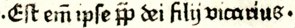
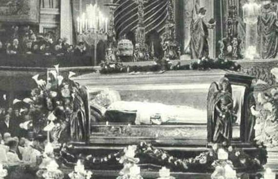

VICARIUS FILII DEI
666, The Number of the Beast
Rev 13:16 And he causeth all, both small and great, rich and
poor, free and bond, to receive a mark in their right hand, or in their
foreheads:
Rev 13:17 And that no man might buy or sell, save he that had the mark,
or the name of the beast, or the number of his name.
Rev 13:18 Here is wisdom. Let him that hath understanding count the
number of the beast: for it is the number of a man; and his number is Six
hundred threescore and six.
Note that according to verse 17, there are three different
characteristics that distinguish the beast:
- his mark (of authority)
- his name
- the number of his name (666).
It might be argued by some that 666 must be applied to one man's
name, and that this will then help identify him as the
antichrist. I would offer the following verse to show that 666 need not
apply solely to a man's name:
Rev 19:16 And he hath on his vesture and on his thigh a name
written, KING OF KINGS, AND LORD OF LORDS.
The same Greek word translated as name (onoma: G3686) that appears
in Revelation 13:17-18 is also used in chapter 19:16, so clearly the
word can also apply to a title, and not just one man's name.
Now, we are told that it takes a certain understanding and
wisdom to discern just how this number is actually applied. Based on
the fact that 666 can apply to a title, below are several words and
phrases that have been put forth over the centuries as probable
solutions to the enigma of 666.
The numeric equivalents of Greek letters can also be found in the
Encyclopedia Britannica under "Languages of the World", Table 8.
The ancient Greek word for "the Latin speaking man"
is LATEINOS
| L = 30 |
lambda |
| A = 1 |
alpha |
| T = 300 |
tau |
| E = 5 |
epsilon |
| I = 10 |
iota |
| N = 50 |
nu |
| O = 70 |
omicron |
| S = 200 |
sigma |
| ------------ |
| 666 |
NOTE: Latin is the official language of the Roman Catholic Church.
Church Documents are usually published first in Latin, and then
translated from the Latin into other languages. The association of
"Lateinos" with 666 was first suggested by Irenæus (ca. 130-202 A.D.)
who proposed in his Against Heresies that it might be the name
of the fourth kingdom in Daniel 7:7.
Then also Lateinos has the number six hundred and sixty-six; and
it is a very probable [solution], this being the name of the last
kingdom [of the four seen by Daniel]. For the Latins are they who at
present bear rule: I will not, however, make any boast over this
[coincidence].
Source: Against
Heresies, by Irenæus, Book 5, chapter 30, paragraph 3.
St. Irenaeus
biography online at the New Advent Catholic web site.
The ancient Greek for
"The Latin Kingdom" is
HE LATINE BASILEIA
BASILEIA is Strong's # G932 |
The ancient Greek for
"Italian Church" is
ITALIKA EKKLESIA
EKKLESIA is Strong's # G1577 |
And in ancient Greek
the word APOSTATES |
And in ancient Greek
the word for "tradition"
PARADOSIS
Strong's # G3862 |
| H = 0 |
(transliterated) |
| E = 8 |
eta |
|
|
| L = 30 |
lambda |
| A = 1 |
alpha |
| T = 300 |
tau |
| I = 10 |
iota |
| N = 50 |
nu |
| E = 8 |
eta |
| |
|
|
|
| B = 2 |
beta |
| A = 1 |
alpha |
| S = 200 |
sigma |
| I = 10 |
iota |
| L = 30 |
lambda |
| E = 5 |
epsilon |
| I = 10 |
iota |
| A = 1 |
alpha |
|
| 666 |
|
| I = 10 |
iota |
| T = 300 |
tau |
| A = 1 |
alpha |
| L = 30 |
lambda |
| I = 10 |
iota |
| K = 20 |
kappa |
| A = 1 |
alpha |
| |
|
|
|
| E = 5 |
epsilon |
| K = 20 |
kappa |
| K = 20 |
kappa |
| L = 30 |
lambda |
| E = 8 |
eta |
| S = 200 |
sigma |
| I = 10 |
iota |
| A = 1 |
alpha |
|
| 666 |
|
| A = 1 |
alpha |
| P = 80 |
pi |
| O = 70 |
omicron |
| ST = 6 |
stigma* |
| A = 1 |
alpha |
| T = 300 |
tau |
| E = 8 |
eta |
| S = 200 |
sigma |
|
| 666 |
* Stigma is a now obsolete Greek character, but it appears in
the New Testament in Rev 13:18 to give the value 666 (chi xi stigma -
See Strong's Concordance, # G5516).
|
| P = 80 |
pi |
| A = 1 |
alpha |
| R = 100 |
rho |
| A = 1 |
alpha |
| D = 4 |
delta |
| O = 70 |
omicron |
| S = 200 |
sigma |
| I = 10 |
iota |
| S = 200 |
sigma |
|
| 666 |
|
| NUMERAL |
NAME |
VALUE |
| I |
unus |
1 |
| V |
quinque |
5 |
| X |
decem |
10 |
| L |
quinquaginta |
50 |
| C |
centum |
100 |
| D |
quingenti |
500 |
| M |
mille |
1000 |
VICARIUS FILII DEI
| THE LITERAL MEANING: |
VICARIUS - substituting for, or in place of |
|
FILII - means son |
|
DEI - means GOD |
| V |
= |
5 |
|
F
|
= |
no value |
|
D |
= |
500 |
| I |
= |
1 |
I |
= |
1 |
|
E |
= |
no value |
| C |
= |
100 |
L |
= |
50 |
|
I |
= |
1 |
| A |
= |
no value |
I |
= |
1 |
|
|
|
-------- |
| R |
= |
no value |
I |
= |
1 |
|
|
|
501 |
| I |
= |
1 |
|
|
-------- |
|
|
|
|
| U/V |
= |
5 |
|
|
53 |
|
|
|
|
| S |
= |
no value |
|
|
|
|
|
|
|
| |
|
-------- |
|
|
112 + 53 + 501 = 666 |
| |
|
112 |
|
|
|
|
|
|
|
DUX CLERI
translated means Captain of the Clergy |
LUDOVICUS
translated means Vicar of the Court |
| D = 500 |
| U = 5 |
| X = 10 |
|
| C = 100 |
| L = 50 |
| E = no value |
| R = no value |
| I = 1 |
| ---------------- |
| 666 |
|
| L = 50 |
| U = 5 |
| D = 500 |
| O = no value |
| V = 5 |
| I =
1 |
| C = 100 |
| U = 5 |
| S = no value |
| ---------------- |
| 666 |
|
The numeric equivalents of Hebrew letters can be found in the
Encyclopedia Britannica under "Languages of the World", Table 50.
|
ROMIITH
means the Roman Kingdom
| R = 200 |
resh |
| O = 6 |
waw (vav) |
| M = 40 |
mem |
| I =
10 |
yod |
| I =
10 |
yod |
| TH = 400 |
taw |
| -------------- |
| 666 |
|
ROMITI
means the Roman Man
| R = 200 |
resh |
| O = 6 |
waw (vav) |
| M = 40 |
mem |
| I = 10 |
yod |
| T = 400 |
taw |
| I = 10 |
yod |
| ---------- |
| 666 |
|
Note:
- Lateinos, Ecclesia Italika, and Romith are cited as possible
solutions by Johannes Gerhard (1582-1637), a Lutheran, in his Adnotationes
in Apocalypsin, page 110.
- Romith, Vicarius Filii Dei, Dux Cleri, Ordinarius Ovilis
Christi Pastor, and Dic Lux are cited by the rector of Berlin, Andreas
Helwig [or Helwich] (1572-1643) in his Antichristus Romanus, in
proprio suo nomine, numerum illum Apocalypticum (DCLXVI) continente
proditus, published in 1612 in Wittenberg.
- Dux Cleri is cited by Walter Brute (or Britte), a fourteenth
century follower of Wycliff, in his Registrum, page 356.
- Ludovicus was proposed by James Bicheno (d. 1831), a British
minister and author, applying it at the time to the French King Louis
XIV, as the two-horned beast from the earth.
- He Latine Basileia and Lateinos are cited by Alexander Campbell
(1788-1866), founder of the Disciples of Christ, in A Debate on
the Roman Catholic Religion of 1837.
See The PROPHETIC FAITH OF OUR FATHERS,
The Historical Development of Prophetic Interpretation, by Le Roy Edwin
Froom, Volumes II and IV, published by the Review and Herald Publishing
Association, Washington D.C., Copyright 1948.
This relationship of 666 in Greek, Latin, and Hebrew is only one
relatively small, yet important indicator that the Papacy is the
Antichrist and the beast from the sea of Revelation 13. This
association by itself proves little, as 666 can fit other people using
the same methods. All the other biblical characteristics of the
Antichrist must be considered and met as well, then this association
becomes significant.
An objection has been raised that the method of gematria used
above to calculate the Roman numeral value of phrases is incorrect. The
word VICARIUS it is argued, must be calculated with letters grouped as
follows: VI=6 C=100 A=0 R=0 IU= 4 S=0, for a value of only 110, instead
of 112. This is patently incorrect. The value of each individual letter
is to be added to yield a total value. It is totally irrelevant to the
calculation if adjacent letters can be combined in groups to give a
value. This assertion that letters must be grouped is nothing but sheer
nonsense.
666 and CÆSAR NERO
Some will suggest that the book of Revelation was written only for
those living at the time, and that 666 most probably applies to Cæsar
Nero, who ruled Rome from 54 to 68 A.D., rather than someone from
latter centuries. This point of view, which suggests Revelation had an
immediate application to the first century, rather than being
prophetic, is known as preterism, and is commonly held by the
Catholic Church. So, just how is Nero linked to 666?
The preterist takes a relatively uncommon form of Nero's name,
Nero Cæsar or Cæsar Nero, and adds an "n", resulting in Neron Cæsar.
Next the Latin is transliterated into Aramaic, resulting in nrwn
qsr, which when using the numeric equivalent of the letters, then
adds up to 666 as follows:
| Nun |
= |
50 |
| Resh |
= |
200 |
| Waw |
= |
6 |
| Nun |
= |
50 |
|
| Qoph |
= |
100 |
| Samech |
= |
60 |
| Resh |
= |
200 |
An example of this spelling has apparently been recently
discovered in one of the Dead Sea scrolls. If you use the same process,
but without the added "n" the result is 616. Interestingly, some early
manuscripts have 616 rather than 666, but even scholars such as Irenæus
[A.D. 120-202] attribute the 616 to only a copyist error (Against
Heresies: Book V Chapter XXX.),
"this number [666] being found in all the most approved and
ancient copies" [of the Apocalypse] and asserts that "men
who saw John face to face bearing their testimony" [to it - 666].
There is a problem though with the above calculation. According to
the rules of Jewish numerology, known as gematria, when the
letter Nun appears a second time in a word, it is known as a "Final",
and takes the value of 700.* So to be precise, NRWN QSR actually adds
up to 1316 and not 666.
*Source: Behind Numerology, by Shirley Blackwell Lawrence,
copyright 1989, published by Newcastle Publishing Co., Inc., North
Hollywood, California, ISBN 0-87877-145-X, page 41.
So the preterist calculation which
attributes 666 to Nero, however, is nothing more than a rather
desperate attempt to find some likely candidate for the Antichrist
other than the Papacy.
THE WORD ANTI-
Look up in Strong's Concordance word 473 in the Greek dictionary.
You will find the the word anti is often used to denote substitution-
473. anti, an-tee'; a prim. particle; opposite, i.e. instead or
because of (rarely in addition to):--for, in the room of. Often used in
composition to denote contrast, requital, *substitution*,
correspondence, etc.
An example of how anti is used this way can be found in the words
type and antitype, which are used with respect to Bible prophecy. The
"type" is the pattern or symbol, and the antitype is the fulfillment.
The Jewish Passover was a "type" and the crucifixion of Jesus is the
"antitype" or fulfillment of the example of the type. You substitute
the antitype into the symbolism of the type to arrive at the complete
meaning.
The Catholic Church has essentially
confirmed this usage of the word anti. In the 1994 Catholic Almanac
on page 158 there is "the list of men who claimed or exercised the
papal office in an uncanonical manner." So these men tried to
substitute themselves for the true Pope, and usurp that office, so to
speak. The Catholic church denies the papal authority of the men on
that list because they attempted a substitute (false) claim on the
Papacy. That list is a list of ANTI-POPES! So the word anti can clearly
mean a substitute for something.
THE WORD ANTICHRIST
Antichrist (word 500 in Strong's Greek dictionary) can be
correctly interpreted then, as someone who substitutes himself for
Jesus Christ, the Son of God, just as an antipope substituted himself
into the office of the Papacy.
The Vicar of Christ (Vicarius
Christi)
"Vicar of Christ . . . Title used almost exclusively of the
Bishop of Rome as successor of Peter and, therefore, the one in the
Church who particularly takes the place of Christ; but used also of
bishops in general and even of priests. First used by the Roman Synod
of A.D. 495 to refer to Pope Gelasius; more commonly in Roman curial
usage to refer to the Bishop of Rome during the pontificate of Pope
Eugene III (1145-1153). Pope Innocent III (1198-1216) asserted
explicitly that the Pope is the Vicar of Christ; further defined at the
Council of Florence in the Decree for the Greeks (1439) and
Vatican Council I in Pastor Aerternus (1870). The Second
Vatican Council, in Lumen Gentium , n.27, calls bishops in
general "vicars and legates of Christ." All bishops are vicars of
Christ for their local churches in their ministerial functions as
priest, prophet, and king, as the Pope is for the universal church; the
title further denotes they exercise their authority in the Church not
by delegation from any other person, but from Christ Himself."
Source: Catholic Dictionary, Peter M.J. Stravinskas,
Editor, published by Our Sunday Visitor, Inc., Huntington, 1993, pp.
484-485.
THE WORDS VICARIOUS AND VICAR
Now look up the word vicarious in almost any common dictionary.
Here is what you would find in the Webster Handy College Dictionary:
"substituting for or, feeling in place of another."
Also in the Webster's II New Riverside Desk Dictionary for
the definition of Vicar-
1. A parish priest in the Church of England.
2. A cleric in the Episcopal Church in charge of a chapel.
3. One who serves as a *substitute* for another.
A Vicar General is defined in the 1994 Catholic Almanac on page
330 as "a priest or bishop appointed by the bishop of a diocese to
serve as his deputy, with ordinary executive power, in the
administration of the diocese." So a vicar serves in the place of
(substituting for) the bishop, and assumes his power of office for
certain duties.
So the Papal title of VICAR OF CHRIST which in Latin is VICARIUS
CHRISTI, means a SUBSTITUTE FOR CHRIST, which is synonymous with
Antichrist, i.e., assuming the power of God on earth! This blasphemous
claim is made repeatedly by various Popes and is the very foundation of
Roman Catholicism and it's Papacy.
Some Catholics may protest that the Pope represents, but does not
substitute for Jesus Christ, to avoid the association.
Now, from the Webster Hand College Dictionary, the
definition of the word represent:
1. portray; depict; describe.
2. play the role of; impersonate.
3. denote; symbolize; stand for.
4. speak and act for; *be a substitute for*.
5. set forth; assert.
6. be composed of; consist in.
Clearly then, Vicar of Christ (Vicarius Christi) and Antichrist
have exactly the same meaning. The Pope substitutes himself in place of
God on earth, and that is *exactly* the meaning of Antichrist.
Some Catholics will claim that the title VICARIUS FILII DEI is an
anti-catholic fabrication, a complete fake, never used by the
Catholic church. One example of this was online at the Catholic
Envoy Magazine
in the article titled Pope
Fiction by Patrick Madrid (See Fiction 5). My complete discussion with Patrick Madrid.
Another Catholic apologist, Karl Keating of the organization Catholic Answers, in a debate in
the fall of 1989 with Jose Ventilacion of Iglesia ni Cristo, stated
the following:
The whole Iglesia argument
against the Catholic Church is a big fraud, and let me prove it to you, from Pasugo [God's Message]. I mentioned in my opening remarks,
Iglesia is so fond of
claiming that the Pope is the beast of Revelation. We know that the
beast of Revelation has the number 666, right?
Now here is the argument, follow
this carefully. The Pope's have what is known as a tiara, that means a
triple crown, a triply high crown, three levels. The beast can be
identified. You find a man whose name, when added up adds up to 666, or
a man whose title adds up to 666. Now, Iglesia ni Cristo says two
things. One, that the title of the Pope, in Latin, is Vicarius Filii
Dei, and second, that that title appears on the three bands of the
tiara. I have in front of me a photo copy of the September 1976 issue
of Pasugo. Here is a
drawing made by the staff showing the tiara with those words on it.
This is just a pen drawing. Two things to say. Does the title Vicarius
Filii Dei add up to 666? Yes it does. But, is that a title of the
Popes? Have they ever
used it? No.
Do you know what Vicarius Filii
Dei means? It means vicar, or representative, or agent, Vicar of the
Son of God. The Pope has never used that title. No Pope ever. The official title of the pope, one of
several, is Vicar of Christ, not Vicar of the Son of God. We Catholics
claim he is the representative on earth of the God-man the Messiah, not of the second person of the Trinity as
such. But you see, the Vicar of Christ, in Latin, is Vicarius Christi,
and when you add up the letters, they don't add up to 666.
So the first thing, the first
thing, that the Iglesia ni Cristo has done, and as I say, it repeats
this story every four
issues or so in its magazine. The first thing is to claim that the
title of the Pope is Vicarius Filii Dei. That's a lie. It's not at all. Why does it claim that? Because
it wants to find a title that adds up to 666. It doesn't care about the
truth!
Here is the
video on YouTube.
Here is audio of the above quote
(mp3).
Mr. Keating also stated this in print: "Vicarius Filii Dei
never has been used as a title by any Pope.", Catholicism and
Fundamentalism, by Karl Keating, Ignatius Press, 1988, pg
221.
The following evidence is prove positive that VICARIUS FILII DEI
is indeed genuine.
|
VICARIUS FILII DEI
The Historical Proof.
|
The Donation
of Constantine is the most famous forgery in European
history, and was discovered in the Pseudo-Isidorian Decretals in the
9th century (c. 847-853). The forger is thought to have been Johannes
Hymonides (John the Deacon of the 9th century). The
Pseudo-Isidorian Decretals are fictitious letters alleged to be from
early popes [Clement (A.D. 100) to Gregory the Great (A.D. 600)],
collected by Isidore Mercator in the 9th century. Since the scholarly
criticism of the fifteenth century they have been known to be forgeries
and have been called "Pseudo-Isidorian Decretals" or False Decretals,
to acknowledge that they are fraudulent.
The donation reads in part as follows in Latin: (caps added for
emphasis) -
... ut sicut B. Petrus in terris VICARIUS FILII DEI esse videtur
constitutus, ita et Pontifices, qui ipsius principis apostolorum gerunt
vices, principatus potestatem amplius quam terrena imperialis nostrae
serenitatis mansuetudo habere videtur, conscessam a nobis nostroque
imperio obtineant...
In English that is-
... as the Blessed Peter is seen to have been constituted vicar
of the Son of God on the earth, so the Pontiffs who are the
representatives of that same chief of the apostles, should obtain from
us and our empire the power of a supremacy greater than the clemency of
our earthly imperial serenity is seen to have conceded to it,
(continuing beyond the Latin above)
choosing that same chief of the apostles and his vicars to be our
constant intercessors with God. And to the extent of our earthly
Imperial power, we have decreed that his holy Roman Church shall be
honored with veneration, and that more than our empire and earthly
throne the most sacred seat of the Blessed Peter shall be gloriously
exalted, we giving to it power, and dignity of glory, and vigor, and
honor imperial. And we ordain and decree that he shall have the
supremacy as well over the four principal seats, Alexandria, Antioch,
Jerusalem, and Constantinople, as also over all the churches of God in
the whole earth. And the Pontiff, who at the time shall be at the head
of the holy Roman church itself, shall be more exalted than, and chief
over, all the priests of the whole world, and according to his judgment
everything which is provided for the service of God and for the
stability of the faith of Christians is to be administered.
Source: Christopher B. Coleman's The
Treatise of Lorenzo Valla on the Donation of Constantine, pp.
12,13 Copyright 1922 by Yale University Press, New Haven, Conn.
Photos
of a 16th century copy of the Donation previously online at the
Vatican Secret Archive web site. The phrase vicarius filli Dei appears
at the end of the 5th line down of the left page of the 7th
photo. The image below is enlarged by 100% and sharpened to
make it readable. See also this page, #11.
|
rime sanitati comperi me restitutum, utile
judicauimus
una cum nostris satrapibus
omnibus et
universo Senatu optimatibus It
et cuncto populo
Romanae gloriae imperij
subiacenti, ut sicut in
terris vicarius filii Dei
esse videtur
constitutus etiam et pontifices,
qui ipsius
principes Apostolorum gerunt
|
|
The Donation of Constantine has two parts, the first relates the
alleged conversion story of Constantine to the Christian faith, and is
called the "Confessio". The second part, called the "Donatio", lists
the authority, privileges and property bestowed on the papacy by the
emperor. It was later incorporated into most of the medieval
collections of Catholic canon law (Anselm's, Cardinal Deusdedit's (c.
1087), and Gratian's Decretum (c. 1148) also known as Concordia
Discordantium Canonum).
University of Zaragosa Library Catalogue Entry Corpus
Iuris Canonici. Decretum Gratiani, cum apparatu Bartholomaei
Brixiensis et Johannis Semecae, Basileae : Johannes Froben , 13 junio
1493. (Has full document download, .djvu format)
- Scanned page (.gif) - Distinctio
96 vicarius filii Dei (Quote of
Donation of Constantine)
At right is the page of Gratian's Decretum printed in 1512
with the title vicarius filii dei indicated by the arrow. The entire
volume is online at Bayerische
Staatsbibliothek, the title appears on photo
201.
|
 |
The Donation of Constantine was cited in writing by no less than
10 Popes as proof of their civil authority and sovereignty over Rome,
and what came to be known as the Papal States, which included a large
portion of Italy. It was also eventually exposed as a pious fraud in
1440 by Laurentius Valla who proved the donation
had to have been written several centuries after the death of
Constantine (337 A.D.) The Vatican condemned Valla's scholarly work by
listing it in the Index
Librorum Prohibitorum, the Index of Prohibited Books of
1559 (a
1569 printing at Google books), and as late as 1580 the official
edition of the Corpus Juris upheld the genuineness of the False
Decretals. So the Donation of Constantine was held to be genuine for
centuries.
Catholics finally abandoned the defense of the authenticity of the
Donation of Constantine shortly after Cesare Baronius
published his Annales Ecclesiastici in 1592, which admitted the
fraud, although the Donation and title Vicarius Filii Dei continued to
appear in Canon law and other Catholic publications well into the 19th
century.
[Pg. 206] In his Annales Ecclesiastici (published
1588-1607) written in advocacy of the papacy and the Catholic Church,
he [Baronius] took the position that the falsity of the Donation had
been proven and, abandoning its defence, discussed it as a forgery.
2
...
[Pg. 207] ... Starting with his apologetic attitude on behalf of the
papacy, and the existence of Greek texts of the Donation, he advanced
the theory that Greeks had perpetrated the forgery and used it to
establish the antiquity of the See of Constantinople.
2 Under the year
324, nos. 117-123. Cf. also A.
D. 1191, no 51.
Source: Constantine the Great and Christianity, by
Christopher Bush Coleman, New York, The Columbia University Press;
Longmans, Green & Co., Agents, 1914, pgs. 206,
207.
Here are papal documents in which vicarius filii Dei
appears in various forms:
1.
Pope Leo IX, In
Terra Pax Hominibus, 1054.
2. Pope Nicholaus IV, letter to Caydonius the
Tartar, 1289.
3. Pope John XXII, Licet juxta
doctrinam, 1327.
4. Pope Paul VI, Rivi
Muniensis, 1965.
5. Pope Paul VI, Bafianae,
1968.
POPE LEO IX — 1054 — IN TERRA PAX HOMINIBUS
VICARIUS
FILII DEI USED BY POPE LEO IX IN AN OFFICIAL LETTER
THAT RESULTED IN THE CATHOLIC CHURCH BEING SPLIT IN TWO!
According to the 1913 Catholic
Encyclopedia entry on the Donation of Constantine:
The first pope who used it in
an official act and relied upon it, was Leo IX; in a letter of 1054 to Michael Cærularius,
Patriarch of Constantinople, he cites the "Donatio" to show that the
Holy See possessed both an earthly and a heavenly imperium, the
royal priesthood. ... Gregory VII himself never quoted this document in
his long warfare for ecclesiastical liberty against the secular power.
But Urban II made use of it in 1091 to support his claims on the island
of Corsica. Later popes (Innocent III, Gregory IX, Innocent IV) took
its authority for granted (Innocent III, Sermo
de sancto Silvestro, in P.L., CCXVII, 481 sqq.; Raynaldus, Annales,
ad an. 1236, n. 24; Potthast, Regesta, no. 11,848), and ecclesiastical
writers often adduced its evidence in favour of the papacy. The
medieval adversaries of the popes, on the other hand, never denied the
validity of this appeal to the pretended donation of Constantine ...
The authenticity of the document, as already stated, was doubted by no
one before the fifteenth century.
Source: The
1913 Catholic Encyclopedia online at the New Advent web
site. Scanned page of Volume 5, entry on Donation of Constantine, page
120.
The text of the letter of Leo IX to Michael Cærularius, "In
terra pax hominibus", is cited in the following work: Several
Tracts Against Popery, by Michael Geddes, LL.D., London,
1715. See pages 12 - 20.
In this letter, which the
1913 Catholic Encyclopedia deems an official act, Pope Leo
IX was asserting his primacy as the Bishop of Rome, and to that end he
reproduced that portion of the donation containing vicarius filii Dei
(see page 12 at left below) for the edification of the Greek Patriarch.
In the prologue of his citation of the donation, Leo IX said, in
affirming the donation as genuine:
"But lest perhaps", saith Leo,
"some Scruple may still remain with you concerning it's earthly
Domination, (that is the Papacy's) and that you may not so much as
lightly suspect, that the holy Roman See seeks to vindicate and
defend its unshaken Honour with foolish and old Wives Fables, we will
here produce a few Privileges which were confirmed by the Hand of the
said Constantine, ... by which Truth will be confirmed, ... we
do not follow learned Fables, but do manifest unto you the Power of Our
Lord Jesus Christ [2 Pet. 1:16], ... Know ye that the same
glorious Prince in the aforesaid Privilege, did, ... thus promulgate
the special Dignity of the Roman Church". (pgs. 18, 19)
As Geddes says:
"Was there
ever any Truth spoke of with more Assurance, or with a greater Air of
Devotion, than Constantine's Donation, and the Roman
Church's never having made use of Fables, as spoke of here by Leo."
"As Leo is, you see, in his Prologue to this
Donation, very peremptory that it is authentick, so he triumphs in his
Epilogue to it, as if its being so were made indubitable by him,
saying," ... 'Wherefore Truth being supported by these and many more
such Testimonies, does not blush, but impudent Vanity is
confounded.' "If this Pope had any Shame in him, he would
never have ventured on this Occasion to have spoke either of Blushing
or of Impudence; or if he had had any Religion, would he have dared to
have made such a Grimace as this."
"For as if he himself believed all that he saith
here so positively, and with so great an Air of Religion, concerning
these Donations being indubitably authentick, he was certainly the
simplest and most credulous Man that ever put Pen to Paper: So if he
did not believe it himself, as it is more than probable he did not, he
was a most profane and vile Hypocrite to cant about it, as he does.
However, what this Pope saith here so dogmatically of the Instrument of
Constantine's Donation, and its being authentick, ought to
be remembered." (pgs. 19, 20)
The letter begins with the Intitulatio:
"Leo episcopus, servus servorum Dei", which is characteristic of
official papal bulls. It was addressed to Michael Cærularius,
Patriarch of Constantinople,
and Leo, Metropolitan of Achrida, and
was in response to a letter sent by Leo, Metropolitan of Achrida to
John, Bishop of Tranum (Bulgaria), that categorically attacked the
customs of the Latin Church that differed from those of the Greeks.
Especially criticized were the Roman traditions of fasting on the
Saturday Sabbath and consecration of unleavened bread. Leo IX in
his letter accused Constantinople of historically being the source of
heresy and claimed in emphatic terms the primacy of the Bishop of Rome
over even the Patriarch of Constantinople*, who would have none of it.
After Leo's assertion of primacy was summarily rejected, Patriarch
Cærularius was excommunicated by papal legates who entered
Constantinople's St. Sophia during the liturgy on July 16, 1054, and
publicly threw down the Bull that anathematized Cerularius on the altar
table. By that dramatic act, the Church was split in two in the Great
Schism that has ever since divided East and West.
* "Pope Leo IX. cites long
extracts of it [the Donation] in his letter to Michael Cerularius,
patriarch of Constantinople, in 1054, in order to establish against the
Greeks the spiritual and temporal jurisdiction of the Holy See.2"—
The Power of the Pope During the Middle Ages, by M. Gosselin,
Vol. 1., Translated by Rev. Matthew Kelly, London, pg.
318.
The full Latin text of the epistle of Pope Leo IX is online:
- Migne's Patrologia
Latina, Vol. 143 (cxliii), Leo IX Epistolae Et Decreta .pdf - 1.9 Mb
See Col. 744B-769D (pgs. 76-89) for Leo IX's letter, and Col.
753B (paragraph XIII, pg. 80) for Vicarius Filii Dei.
- Mansi, Labbe and Cossart's Sacrorum
Conciliorum Nova Amplissima Collectio, Vol.
19 (xix) .pdf - 66 Mb
See Col. 635-656. Vicarius Filii Dei appears in paragraph XIII of Col.
643.
(Online
at Gallica (National Library of France), Col. 643, pg. 391 - page scan).
- Labbe and Cossart, Sacrosancta Concilia Ad Regiam
Editionem Exacta: Book 9, 1671, Paris, Col.
949-971, Vicarius Filii Dei appears in section XIII, Col.
957.
- Acta
et scripta quae de controversiis ecclesiae Graecae et Latinae,
Dr. Cornelius Will, 1861.
This book has the text of the letters relevant to the Great Schism of
1054. Vicarius Filii Dei appears in section XIII, pg. 72.
- Cited in Sources of Catholic Dogma, translated by
Roy J. Deferrari from the 30th ed. of Heinrich Denzinger's Enchiridion
Symbolorum, The Primacy of the Roman Pontiff, 350-353
(Google),
pg. 142, St. Louis: Herder, 1957.
The full Latin text of the Donation of Constantine
is online:
Vicar
of Jesus Christ
Pope Innocent III — (1198-1216) — Inter
corporalia
Pope Innocent III popularized the title "Vicar of Jesus Christ".
In Inter corporalia, he claimed that as the Vicar of Jesus
Christ, only the Roman Pontiff could remove or transfer bishops,
because he acted not with human, but with divine power and authority
reserved for the Roman Pontiff alone:
Non enim humana sed potius divina potestate conjugium
spirituale dissolvitur, cum per translationem, vel depositionem
auctoritate Romani Pontificis (quem constat esse vicarium Jesu
Christi), episcopus ab ecclesia removetur: et ideo tria haec, quae
praemisimus, non tam constitutione canonica, quam institutione divina
soli sunt Romano Pontifici reservata. — Official
1582
"In Aedibus Populi Romani" edition of Corpus Juris Canonici,
Decretal. Greg. IX., de Transl., lib.
i. tit. 7, c. 2, Inter
corporalia, col. 213, pg. 107.
For it is not by human but rather divine power that spiritual
marriage is dissolved, when as by translation or cession by the
authority of the Bishop of Rome (Whom it is known to be the Vicar of
Jesus Christ) a Bishop is removed from his Church: These three are
reserved to the Roman Pontiff alone—not so much by Canonical
institution as by Divine institution.
In Licet in tantum, Pope Innocent III stated that he was
the successor of Peter and Vicar of Jesus Christ:
Sicut legitimi matrimonii vinculum, quod est virum est et uxorem,
homo dissolvere nequit, Domino dicente in Evangelio, Quod Deus
conjunxit, homo non separet (Matth. xix,6) : sic et spirituale
foedus conjugii, quod est inter episcopum et Ecciesiam, quod in
electione initiatum, ratum in confirmatione et in consecratione
intelligitur consummatum, sine illius auctoritate solvi non potest, qui
successor est Petri et vicarius Jesu Christi. — Official 1582 "In
Aedibus Populi Romani" edition of Corpus Juris Canonici, Decretal. Greg. IX., de Transl., lib. i. tit.
7, c. 4, Licet
in tantum, col 218, pg. 109.
For instance, man can not overthrow the bond of a legitimate
marriageof husband and wife, the Lord saying in the Gospel, That which
God hath joined together, let not man put asunder (Matt. xix, 6): so
also is the spiritual covenant of marriage, which is between the bishop
and the church, which begins in the election, is ratified in
confirmation and in the consecration is completed, it is understood,
can not be dissolved without the authority of he who is the successor
of Peter, and the vicar of Jesus Christ.
Jam ergo videtis quis iste servus, qui super familiam constituitur,
profecto vicarius Jesu Christi, successor Petri, Christus Domini, Deus
Pharaonis : inter Deum et hominem medius constitutus, citra Deum, sed
ultra hominem : minor Deo, sed major homine : qui de omnibus judicat,
et a nemine judicatur : Apostoli voce pronuntians, < qui me judicat,
Dominus est (1 Cor. IV) >
Now, therefore, you see this servant, who is appointed over the family,
verily the vicar of Jesus Christ, the successor of Peter, the Lord's
Anointed, the God of Pharaoh, placed in the middle between God and man,
this side of God, but beyond man, inferior to God, but
greater than man: who judges all, and is judged of no man: The
Apostles affirming voice, "he who judges me is the Lord." (1 Cor 4:4)
Innocent III, Sermo II, In Consecratione Pontficis Maximi,
Migne, Patrologia
Latina, vol. 217, col. 658.
In the 12th century, the canonist John
the Deacon of the Lateran wrote Liber
de ecclesia Lateranensi (On the Lateran Church) in which
the text of the Donation of Constantine appeared, including Vicarius
Filii Dei.
- See Migne, Gregorii Papaei, Cognomento Magni, Opera Omnia,
Book IV, Liber de ecclesia Lateranensi, pg.
1389.
- See Migne, Patrologiae Cursus Completus, Book CXCIV
(194), Liber de ecclesia Lateranensi, Col
1545.
 |
St. John Lateran Cathedral
figures prominently in Bible prophecy as it has the official "cathedra"
or throne of the Bishop of Rome, it is the oldest or "Mother" church of
Christendom, and it was in fact formerly the palace of the emperor,
bequeathed to the Pope when Constantine vacated Rome for
Constantinople, leaving the Bishop of Rome to fill the vacuum. This is
mentioned in both the Donation and in the book of Revelation:
Rev 13:2 And the beast [papal
Rome] which I saw was like unto a leopard [Greece], and his feet were
as the feet of a bear [Medo-Persia], and his mouth as the mouth of a
lion [Babylon]: and the dragon [pagan Rome / Satan] gave him [the
papacy] his power, and his seat [cathedra, St. John Lateran], and great
authority.
At left is Pope Benedict XVI
on the throne in the apse of St. John Lateran Cathedral, formerly the
palace of Emperor Constantine the Great, now the official cathedra of
the Bishop of Rome. St. John Lateran is located on one of the seven
hills of Rome. See: What
Does The Word Vatican Mean?
|
Vicar of God
Pope Nicholas II — 1278 — Fundamenta Militantis Ecclesiae
"Vicar of Christ (Lat. Vicarius Christi), a
title of the pope implying his supreme and universal primacy, both of
honour and of jurisdiction, over the Church of Christ. ... The title
Vicar of God used for the pope by Nicholas III is employed as an
equivalent for Vicar of Christ." — Vicar of Christ entry, Catholic
Encyclopedia, 1913, Volume 15, pg. 403.
In Fundamenta Militantis Ecclesiae, a papal constitution
issued on July 18, 1278, Pope Nicholas III decreed that the city of
Rome was to be governed by a senate composed of Roman citizens, but
only with his express papal approval. (see
this book)
Decet ipsius nullo modo vacillare iudicia: ut fratres ipsos
nullus saecularis potestatis metus exterreat, nullus temporalis favor
absorbeat, nullus eis terror immineat, nihil eos a veri consilii
soliditate removeat: quin, per ipsum Romanum Pontificem in quibuscumque
negotiis contingeret eorum peti consilia, in consulendo per omnia
liberi, eidem Romano Pontifici in omnibus, quae pro tempore imminent,
libere consulant, et assistant: ipsaque Romani
Pontificis Vicarii Dei, quae suis temporibus occurrerit,
electio, et eorundem cardinalium, (cum expedierit) facienda promotio,
in omni libertate procedant. — Official
1582
"In Aedibus Populi Romani" edition of Corpus Juris Canonici,
Liber Sextus, Book 1, tit. vi - De electione, cap. 17 - Fundamenta
Militantis Ecclesiae, col. 129, (Romani
Pontificis vicarij Dei occurs at bottom of column 132), pg. 68.
Also see footnote z - sed Dei vicarius, and footnote t - vicarij
Dei, at the bottom of the page.
Vicar of Jesus Christ Son
of God
Pope Nicholas IV — 1289 — Letter
to Caydonius the Tatar
Pope Nicolaus IV in a letter dated
July 13th, 1289, inviting Caydonius the Tatar to embrace the Christian
faith, assured him that the Roman Pontiff's office of Vicar of Jesus Christ the Son of God
was in fact a divine appointment:
Prudentia, magnificentia, auctoritate eminebat inter Tartaros
Caydonius Princeps.
Hunc ad fidem pertrahere conatur Nicolaus ratus
multos alios Tartariae; principes movendos esse ad eam amplectendam
ejus principis auctoritate.
Ne miretur Caydonius, si a Romano Pontifice per
litteras invitatur ad Christianam fidem amplectendam. Ex munere enim
sibi divinitus imposito ita agit, et ita illi est agendum; Vicarius enim Jesu Christi Filii Dei
est.
Hic illi explanat Mysterium Incarnationis, vitam,
mortemque Chrifti pro hominum salute latam.
Quare quam maxime potest eum orat, obtestaturque, si
quicquam aeternam salutem suam cordi habet, ut Chriftianae fidei nomen
det.
D. Reate III. Id. Jul. P. a. II. a. D. 1289.
Source: PONTIFICIARUM CONSTITUTIONUM, IN BULLAMIS MAGNO, ET
ROMANO CONTENTARUM, ET ALIUNDE DESUMPTARUM, Aloysius Guerra, STD,
Tomus Secundus, Venetiis, 1772, pg. 456.
Augustinus
Triumphus — (1243-1328) — Summa de potestate ecclesiastica
14th Century Canon
Lawyer Applies Vicarius Filii Dei To The Pope

Agostino Trionfo of Ancona (Augustinus Triumphus)
1243-1328 A.D.
Summa de potestate ecclesiastica (Summary On The Power Of The
Church)
Trionfo was expressly
commissioned by Pope John XXII to produce a book that would set forth
and defend the ecclesiastical and temporal authority of the papacy. The
result was Summa de potestate ecclesiastica, which was
completed in the year 1320 and dedicated to the same Pope, and is
considered the high water mark of papal pretentions.
The Summa de potestate
ecclesiastica of Augustinus Triumphus has been described as 'one of
the half dozen most influential and most important books ever written'
on the nature of the papal supremacy in the Middle ages, 1...
1 C. H.
McIlwain, The Growth of Political Thought in the West (London,
1932), p. 278. — The
Problem of Sovereignty in the Later Middle Ages: The Papal Monarchy
with Augustinus Triumphus and the Publicists by Michael Wilks,
Cambridge University Press, 2008, ISBN 052107018X, 9780521070188,
p. 2
Augustinus' Summa de potestate
ecclesiastica is an extensive treatise, counting over 600 double
column pages in the early printed editions. It consists of 112
questions, divided into three major parts. There are at least
twenty-four extant manuscripts of the complete work, and another
fifteen containing fragments. The Summa received five editions
in the fifteenth century, and the four successive editions in Rome,
beginning in 1582 and ending in 1585, which was the last edition of
Augustinus' work. — High Way
To Heaven, The Augustinian Platform Between Reform and Reformation,
1292-1524, by Eric Leland Saak, Leiden;
Boston, MA: Brill, 2002,
page 50.
The
University of Maryland claims 29 editions of Summa were
published between 1320 and 1584 in Latin, and it is held by 55
libraries worldwide.
| Note that Summa was coming off the
presses of Rome during the early years of the Catholic Church's
enforcement of the Tridentine Index of Forbidden Books (Index
Librorum Prohibitorum), which began in 1546 under Pope Pius IV and
the Council of Trent, and remained in effect for over 300 years. The
1582 printing is prefaced by an endorsement by F. Augustinus Fiuizanius
Romanus, Sacrista, Et Ordinis Augustiniani, Vicarius Generalis, under
the name of Pope Gregory XIII. The crest of Pope Gregory XIII, with
the winged dragon, appears on the title page, as shown below. In Summa,
Agostino applied Vicarius Filii Dei to the papacy.
Refer to the following guide for the Latin and corresponding
English for each edition of Summa. The Latin spelling varies
slightly depending on abbreviations used.
|

|
| |
- Question 6 Ad 1, solus enim Papa dicitur esse Vicarius Dei: ... [Only the Pope is said to be
the Vicar of God: ...]
- Question 22 Ad 2, Sed Papa est vicarius
Dei in terris. [Indeed the Pope is the vicar of God on the
earth.]
- Question 35 Ad 5, Sed Papa est vicarius
Dei. [Indeed the Pope is the vicar of God.]
- Question 36 Ad 7, ... ut sicut beatus
Petrus in terris vicarius filii Dei esse
videtur constitutus, ... [... as the Blessed Peter is seen to have been
constituted vicar of the Son of God on the earth, ...] (Quote of
Donation of Constantine)
- Question 37 Ad 3, Constantinus huiusmodi
translationem fecit auctoritate summi pontificis, qui tamquam vicarius Dei filii [filius] coelestis
imperatoris iurisdictionem habet universalem super omnia regna et
imperia. [Constantine transferred authority to the supreme pontiff, who
is the vicar of God's son, heaven's commander in chief, with universal
governmental jurisdiction over all kingdoms and empires.]
- Question 37 Ad 5, Qualitercunque tamen
institutio Imperii sit variata: nulli tamen dubium esse debet quin
summa pontifex, quem Constantinus vicarium esse
dei filii firmiter confessus est imperatorem possit eligere
quemcumque et undecumque sibi placet in auxilium et defensionem
ecclesiae. [Yet never the less in instituting changes of rulers: there
can be no doubt that the supreme pontiff whom Constantine enduringly
confesses to be the vicar of God's son, the commander in chief, is able
to select whomever from wherever he pleases to aid and defend the
church.]
- Question 43 Ad 3, ... ut sicut beatus
Petrus in terris vicarius filii Dei esse
videtur constitutus, ... [... as the Blessed Peter is seen to have been
constituted vicar of the Son of God on the earth, ...] (Quote of
Donation of Constantine)
- Question 44 Ad 8, Papa est Vicarius
Christi. [The Pope is the Vicar of Christ.]
- Question 45 Ad 2, ... quòd Papa vicarius lesu Christi, vice Dei viventis, in
toto orbe terrarum spiritualium, & temporalium habet universalum
iurisdictionem: ..." [... the fact is the Pope is the vicar of Jesus
Christ, in the place of the living God, has universal spiritual and
temporal jurisdiction of the entire globe of the earth: ...]
- Question 50 Ad 2 addresses the Pope changing
the Sabbath commandment (see below).
- Question 61 Ad 1, Est enim ipse papa Dei filii vicarius.
[The pope is in fact
himself the vicar of the son of God.]
- Question 61 Ad 4, Unde in persona Summi
Pontificis vicarii
Iesu Christi scribitur Ezec. 34. [Therefore the role of the
Supreme Pontiffs is vicars of Jesus Christ as written in Ezek.
34:10-12.]
- Question 101 Ad 7, Sed Papa Christi vicarius est. [Indeed the Pope is
Christ's vicar.]
|
1473 edition of Summa de potestate ecclesiastica,
Augustinus Triumphus
Bayerische
Staatsbibliothek - High Resolution
Color Photos (Has full
document download, .pdf format - 328 Mb).
- Question
6 Ad 1, photo 126 Vicarius Dei see
16th line from top.
- Question
22 Ad 2, photo 249 vicarius Dei see
14th line from top.
- Question
35 Ad 5, photo 374 vicarius Dei see
7th line from top.
- Question
36 Ad 7, photo 391 vicarius filii Dei
(Quote of Donation of Constantine) see 8th line from top.
- Question
37 Ad 3, photo 396 vicarius Dei filius see
3rd line from bottom.
- Question
37 Ad 5, photo 399 vicarium esse Dei filii see 11th line
from top.
- Question
43 Ad 3, photo 426 vicarius filii Dei (Quote
of Donation of Constantine) see 16th line from top.
- Question
44 Ad 8, photo 437 Vicarius Christi see
8th line from top.
- Question
45 Ad 2, photo 440 vicarius lesu
Christi, vice Dei see 10th line from bottom.
- Question
61 Ad 1, photo 560 Dei filii vicarius see
13th line from bottom.
1475 edition of Summa de potestate ecclesiastica, Agostino
Trionfo, Arnold Ther Hoernen, Cologne.
Die
Inkunabelsammlung der Universitäts- und Stadtbibliothek Köln - High
Resolution Color Photos
- Question
6 Ad 1, pg. 102 Vicarius Dei see 16th
line from bottom
- Question
22 Ad 2, pg. 203 vicarius Dei see 9th
line from bottom
- Question
35 Ad 5, pg. 305 vicarius Dei see
14th line from bottom
- Question
36 Ad 7, pg. 319 vicarius filii Dei
(Quote of Donation of Constantine) see 2nd line from top
- Question
37 Ad 3, pg. 323 vicarius Dei filii see
14th line from top
- Question
37 Ad 5, pg. 325 vicariu esse Dei filii see 9th line
from top
- Question
43 Ad 3, pg. 346 vicarius filii Dei (Quote
of Donation of Constantine) see top line
- Question
44 Ad 8, pg. 354 Vicarius Christi see
7th line from top
- Question
45 Ad 2, pg. 356 vicarius lesu Christi, vice
Dei see 6th line from bottom
- Question
61 Ad 1, pg. 450 Dei filii vicarius see
7th line from top
1476 edition of Summa de potestate ecclesiastica, Agostino
Trionfo, Antonio Bartolomei Miscomini, Venezia.
Access
document online at Gallica. (Has full document download, .pdf
format - 92 Mb).
- Question
6 Ad 1, pg. 68 Vicarius Dei
- Question 22 Ad 2, page is missing.
- Question
35 Ad 5, pg. 234 vicarius Dei
- Question
36 Ad 7, pg. 245 vicarius filii Dei (Quote
of Donation of Constantine)
- Question
37 Ad 3, pg. 249 vicarius Dei esse filius
- Question
37 Ad 5, pg. 250 vicarium esse dei filii
- Question
43 Ad 3, pg. 268 vicarius filii Dei (Quote
of Donation of Constantine)
- Question
44 Ad 8, pg. 275 Vicarius Christi
- Question
45 Ad 2, pg. 278 vicarius lesu Christi, vice
Dei
- Question
61 Ad 1, pg. 357 Dei filii vicarius.
1479 edition of Summa de potestate ecclesiastica, Agostino
Trionfo, impr. Francisci de Cinquinis, Rome.
Access
document online at Gallica. (Has full document download, .pdf
format - 79 Mb).
- Question
6 Ad 1, pg. 72 uicarius dei
- Question
22 Ad 2, pg. 157 uicarius dei
- Question
35 Ad 5, pg. 244 vicarius dei
- Question
36 Ad 7, pg. 256 vicarius filii Dei (Quote
of Donation of Constantine)
- Question
37 Ad 3, pg. 260 vicarius Dei filius
- Question
37 Ad 5, pg. 261 vicarium esse Dei filii
- Question
43 Ad 3, pg. 280 vicarius filii Dei (Quote
of Donation of Constantine)
- Question
44 Ad 8, pg. 288 Vicarius Christi
- Question
45 Ad 2, pg. 291 vicarius lesu Christi, vice
Dei
- Question
61 Ad 1, pg. 372 dei filii vicari'
1484 edition of Summa de potestate ecclesiastica, Agostino
Trionfo, Petrus Ungarus, Lugduni.
University of
Zaragosa Library Catalogue Entry (Has full document download,
.djvu format - 27 Mb)
- Question
6 Ad 1, pg. 29 vicarius Dei
- Question
22 Ad 2, pg. 63 vicarius Dei
- Question
35 Ad 5, pg. 99 vicarius Dei
- Question
36 Ad 7, pg. 103 vicariu' filii Dei (Quote
of Donation of Constantine)
- Question
37 Ad 3, pg. 104 vicarius Dei filius
- Question
37 Ad 5, pg. 105 vicariu esse Dei filii
- Question
43 Ad 3, pg. 112 vicarius filii Dei (Quote
of Donation of Constantine)
- Question
44 Ad 8, pg. 115 Vicarius Christi
- Question
45 Ad 2, pg. 116 vicarius lesu Christi, vice
Dei
- Question
61 Ad 1, pg. 148 Dei filii vicarius
1487 edition of Summa de potestate ecclesiastica, Agostino
Trionfo, Johannes Leoviller, Venezia.
Biblioteca
Digital Hiica (Has full document download, .pdf format - 20
Mb)
- Question
6 Ad 1, pg. 81 vicarius Dei
- Question
22 Ad 2, pg. 161 vicarius Dei
- Question
35 Ad 5, pg. 245 vicarius Dei
- Question
36 Ad 7, pg. 256 vicarius filii Dei (Quote
of Donation of Constantine)
- Question
37 Ad 3, pg. 260 vicarius Dei esse filius
- Question
37 Ad 5, pg. 261 vicariu esse Dei filii
- Question
43 Ad 3, pg. 279 vicarius filii Dei (Quote
of Donation of Constantine)
- Question
44 Ad 8, pg. 286 Vicarius Christi
- Question
45 Ad 2, pg. 289 vicarius lesu Christi, vice
Dei
- Question
61 Ad 1, pg. 368 Dei filii vicarius
1582 edition of Summa de potestate ecclesiastica,
Augustini Triumphi, Vincentium Accoltum, Romae.
Universidad
de Granada (Has full document download, pages 1-318 .tif, 69 Mb)
- Question
6 Ad 1, pg. 57 (image 37) Vicarius Dei
- Question
22 Ad 2, pg. 130 (image 74) vicarius
Dei
- Question
35 Ad 5, pg. 208 (image 113) vicarius Dei
- Question
36 Ad 7, pg. 218 (image 118) vicarius filii
Dei (Quote of Donation of Constantine)
- Question
37 Ad 3, pg. 221 (image 119) vicarius Dei
filii
- Question
37 Ad 5, pg. 222 (image 120) vicariu esse Dei filii
- Question
43 Ad 3, pg. 239 (image 128) vicarius filii
Dei (Quote of Donation of Constantine)
- Question
44 Ad 8, pg. 246 (image 132) Vicarius Christi
- Question
45 Ad 2, pg. 248 (image 133) vicarius lesu
Christi, vice Dei
- Question
61 Ad 1, pg. 321 (image 169) Dei filii
vicarius
1584 edition of Summa de potestate ecclesiastica,
Augustini Triumphi, Georgij Ferrarij, Romae.
Google
Books. (Has full document download, 76 Mb.)
- Question
6 Ad 1, pg. 57 (78) Vicarius
Dei
- Question
22 Ad 2, pg. 130 (152) vicarius Dei
- Question
35 Ad 5, pg. 208 (229) vicarius Dei
- Question
36 Ad 7, pg. 218 (239) vicarius filii
Dei (Quote of Donation of Constantine)
- Question
37 Ad 3, pg. 221 (242) vicarius Dei filii
- Question
37 Ad 5, pg. 222 (243) vicariu esse Dei filii
- Question
43 Ad 3, pg. 239 (260) vicarius filii Dei (Quote
of Donation of Constantine)
- Question
44 Ad 8, pg. 246 (267) Vicarius Christi
- Question
45 Ad 2, pg. 248 (269) vicarius lesu
Christi, vice Dei
- Question
61 Ad 1, pg. 321 (342) Dei filii vicarius
-
Question 61 Ad 4, pg.
324 vicarii Iesu Christi
- Question 101 Ad 7, pg.
499 Christi vicarius
Dr. Johannes Quasten (1900-1987), a renowned Catholic patristics
scholar, considered perhaps the greatest authority in this field, when
questioned in 1943 about Vicarius Filii Dei, freely admitted in writing
that "The title Vicarius Filii Dei as well as the title Vicarius
Christi is very common as the title for the Pope." So, it is
reasonable to assume that Dr. Quasten was indeed aware of the title
appearing in Summa, and in Leo IX's letter, thus his concession
that it is very common. See The
Search to Document and Authenticate Vicarius Filii Dei.
These extraordinary and blasphemous claims in Summa
deserve special attention:
Question 6 Ad 1:
Secunda ratio accipitur ex parte Papae. solus
Papa dicitur esse Vicarius Dei: quia solum quod ligatur vel solvitur
per eum, habetur solutum et ligatum per ipsum Deum. Sententia igitur
Papae et sententia Dei vna sententia est: sicut una sententia est
Papae, et auditoris eius. Cum igitur appellatio semper fiat a minori
iudice ad superiorem, sicut nullus est major seipso: ita nulla
appellatio tenet, facta a Papa ad Deum: quia unum consistorium est
ipsius Papae et ipsius Dei: cuius consistorij clauiger et ostiarius est
ipse Papa. Nullus ergo potest appellare a Papa ad Deum. Nullus ergo
potest appellare a Papa ad Deum, sicut nulla potest intrare ad
consistorium Dei, nisi mediante Papa, qui est aeternae vitae cónsistorij clauiger, et ostiarius et
sicut nullus pot appellare ad se ipsum: ita nullas pót appellare à Papa ad Deu. quia vna sententia est,
et vna curia Dei, et Pape.
Second reason considering the role of the
Pope. Only the Pope is said to be the Vicar of God: because he alone is
able to bind and loose, possessing alone loosing and binding given to
him by God. The decision of the Pope and the decision of God constitute
one decision, just as the decision of the Pope and his disciple are the
same. Since, therefore, an appeal is always taken from an inferior
judge to a superior, as no one is greater than himself, so no appeal
holds when made from the Pope to God, because there is one consistory
of the Pope himself and of God Himself, of which consistory the Pope
himself is the key-bearer and the doorkeeper. Therefore no one can
appeal from the Pope to God, as no one can enter into the consistory of
God without the mediation of the Pope, who is the key-bearer and the
doorkeeper of the consistory of eternal life; and as no one can appeal
to himself, so no one can appeal from the Pope to God, because there is
one decision and one court of God, and the Pope.
Question 9: De Exhibitione Honoris Papae. (pg. 71, 1582 edition.)
Displaying honor to the Pope.
Articulus 1:
Utrum honor, qui debetur Christo secundum quod Deus, debeatur Papae.
Whether the honor due Christ as God is due the Pope.
Ad Primum sic proceditur. Videtur enim, quod honor, qui debetur
Christo secundum, quod Deus debeatur Papae. Quia honor debetur
potestati: sed una est potestas Christi secundum quod Deus, et Papae.
quod probatur.
So proceeding on the first point. It is to be seen as fact that
the honor that is due Christ as God is due also to the Pope: because
the honor is due the power, and the power of Christ as God and the
[power of the] Pope are one, which is shown to be true.
So, from the first apparent use of Vicarius Filii Dei by a Pope in
an official act in 1054 A.D., to the last printed edition of Trionfo's Summa
de potestate ecclesiastica in 1585 in Rome, is a of 531 years.
THE POPE CHANGED
SABBATH TO SUNDAY
Satan's policy in this final conflict with God's people is the
same that he employed in the opening of the great controversy in
heaven. He professed to be seeking to promote the stability of the
divine government, while secretly bending every effort to secure its
overthrow. And the very work which he was thus endeavoring to
accomplish he charged upon the loyal angels. The same policy of
deception has marked the history of the Roman Church. It has
professed to act as the vicegerent of Heaven, while seeking to exalt
itself above God and to change His law. (Great Controversy,
591)
Below is Question 50 (L) of Summa
regarding the Third Commandment ( TERTII PRAECEPTI ) from the 1582
edition:

These 6 points regarding papal ability to grant dispensation, are
proposing that Pope's innately possess the authority to overrule the
Sabbath commandment of God as written in the Bible, and so are able to
change it in any aspect, however they should decree.
Nunc considerandum est de dispesatione tertij praecepti.
Now we must consider dispensation of the third commandment.
Circa quod queruntur sex.
In regard to six arguments.
Primo, Utrum Papa possit dispensare, quòd dies Sabbati servetur
secundum sensum spiritualem, non litteralem.
First, whether the pope can grant dispensation, that the Sabbath day
should be observed in a spiritual sense, not literal [according to the
Bible].
Secundo, Utrum Papa possit dispensare, quòd dies Sabbati in diem
Dominicam sit mutata.
Secondly, whether the pope can grant dispensation, changing the sabbath
day to the Lord 's day.
Tertio, Utrum Papa possit dispensare, quòd dies Dominica fiant servilia
opera.
Third, whether the Pope can grant dispensation, permitting servile work
on the Lord's day.
Quarto, Utrum Papa debeat prohibere strictius opera servilia fieri in
die Dominica, quàm fuerint prohibita in die Sabbati.
Fourth, whether the Pope may strictly prohibit servile work on the
Lord's day, as it was prohibited on the Sabbath.
Quinto, Utrum Papa possit dispensare, quòd in dies Dominica fiat forum
rerum emptionis, & venditionis.
Fifth, whether the Pope can grant dispensation, permitting market
buying and selling on the Lord's day.
Sexto, Utrum Papa possit dispensare, quòd in dies Dominica committatur
bellum.
Sixth, whether the Pope can grant dispensation, so that war may be
waged on the Lord's day.
The resolution of the point under
Article 2 (shown above) reads:
Dies Sabbati, in Diem Dominicam iure à Papa mutata est, propter
significatorum preeminentiam, factorum excellentiam, temporumque
convenientiam.
The Sabbath day law has been changed by the Pope to the Lord's
day, due to the preeminence of things signified, and the excellent
factors in agreement with time and circumstance.
So, the same
document that applies Vicarius Filii Dei to the Pope, credits the
papacy with changing God's Commandment from the seventh-day Sabbath to
the first day of the week, Sunday!
The full Third Commandment pages
(Question 50) from the 1582 edition of Summa:
Pages are reduced 50% to only 200k for dialup users.
History identifies the Pope that decreed the change from the
Sabbath to Sunday as Sylvester
I.
Augustinus Triumphus is also described as "a major canon
lawyer of the 13th century, and a simply rabid defender of extreme
papal supremacy." See also Encyclopedia
of the Middle Ages entry on Augustine of Ancona. Here is
some additional information regarding him:
The Problem of Sovereignty in the Later Middle
Ages: The Papal Monarchy with Augustinus Triumphus and the Publicists
By Michael Wilks
Published by Cambridge University Press, 2008
ISBN 052107018X, 9780521070188
p.
2
The Summa de potestate ecclesiastica of Augustinus
Triumphus has been described as 'one of the half dozen most influential
and most important books ever written' on the nature of the papal
supremacy in the Middle ages, 1...
1 C. H.
McIlwain, The Growth of Political Thought in the West (London,
1932), p. 278.
p.
272
Est enim ipse papa Dei Filii vicarius.
— Augustinus
Triumphus, (Agostino Trionfo of Ancona, 1243-1328) Summa de
potestate ecclesiastica (The Power of the Church), lxi. I, p. 321.
p.
543
... quem Constantinus vicarium esse dei
filii firmiter confessus est ... —
Augustinus Triumphus, Summa de potestate ecclesiastica (The
Power of the Church), xxxvii, 5, p. 222.
p.
545
Constantinus huiusmodi translationem fecit auctoritate summi
pontificis, qui tamquam vicarius Dei Filii
[filius] coelestis imperatoris iurisdictionem habet universalem super
omnia regna et imperia — Augustinus
Triumphus, Summa de potestate ecclesiastica (The Power of the
Church) xxxvii. 3 and 3 ad I, p. 221.
HISTORY OF THE
CHRISTIAN CHURCH
By PHILIP SCHAFF
VOLUME V. PART II
THE MIDDLE AGES
FROM BONIFACE VIII, 1294, TO THE PROTESTANT REFORMATION, 1517
BY
DAVID S. SCHAFF, D.D.
PROFESSOR OF CHURCH
HISTORY IN THE WESTERN
THEOLOGICAL SEMINARY, PITTSBURG
NEW YORK
CHARLES SCRIBNER'S SONS
1910
p.
80
Triumphus, an Italian, born in Ancona, 1243, made
archbishop of Nazareth and died at Naples, 1328, was a zealous advocate
of Boniface VIII. His leading treatise, The Power of the Church,—Summa
de potestate ecclesiastica, — vindicates John XXII. for his
decision on the question of evangelical poverty and for his opposition
to the emperor’s dominion in Italy.155
The pope has unrestricted power on the earth. It is so vast that
even he himself cannot know fully what he is able to do.156
His judgment is the judgment of God. Their tribunals are one.157
His power of granting indulgences is so great that, if he so
wished, he could empty purgatory of its denizens provided that
conditions were complied with.158
155 For
edd. of Triumphus’ tract, see Potthast, Bibl. Hist. under
Triumphus. Riezler, p. 286, dates the tract 1324-1328, Haller, p. 83,
1322, Scholz, p. 172, 1320. See Poole, 252 sq.
156 Nec
credo, quod papa possit scire totum quod potest facere per potentiam
suam, 32. 3, quoted by Döllinger, Papstthum, p. 433.
157 This
famous passage runs sententia papae sententia Dei una sententia
est, quia unum consistorium est ipsius papal et ipsius Dei ... cujus
consistorii claviger et ostiarius est ipse papa. See Schwab,
Gerson, p. 24.
158 Totum
purgatorium evacuare potest, 3. 28. Döllinger, p. 451, says of
Triumphus’ tract that on almost every page the Church is represented as
a dwarf with the head of a giant, that is, the pope.
(4) Those vain, or rather lying,
talkers say that all priests, whether pope, archbishop or simple
priest, are by Christ's appointment equal in authority and
jurisdiction; that, in so far as one has more than another, this is
according as the Emperor has conceded to one or another either more or
less; and that as he concedes to one, so he may withdraw it, such
doctrines as these are contrary to the truth, and smack of heretical
pravity.
The Christian Emperor Constantine
testified, saying: the Blessed Peter is seen to have been constituted vicar of the Son of God on
earth. From this it follows self-evidently that Peter can be called the
supreme head of the universal Church according to the way that holy
Scripture explains it, as the ruler of a multitude is said to be the
head. So we read in Joel* [then follows a quote of Hosea 1:11 from the
Vulgate] "Then shall the children of Judah and the children of Israel
be gathered together, and appoint themselves one head, and they shall
come up out of the land: for great shall be the day of Jezreel."
Hoc ille imperator Christianissimus Constantinus
aliquando testatus est dicens: Beatus Petrus videbatur in terris vicarius Dei filii constitutus.
Ex hoc etiam sequitur evidenter, quod Petrus caput universalis
Ecclesiae potest dici juxta morem illum sacrae Scripturae, quo rector
alicujus multitudinis dicitur esse caput. Unde legitur in Joele* ...
* John
XXII errs in attributing the quote to Joel, which has an asterisk to
the side note indicating Hosea.
Discovered in German and Latin by Stephen
Emse while researching for The Truth About 666 and the
Story of the Great Apostasy, Three
Volumes in One, by Edwin de Kock, Copyright © 2011 Edwin de Kock. See
pgs. 306-310 for a detailed discussion of Licet juxta
doctrinam (excerpt below).
— Römisches
Bullarium, oder, Auszüge der merkwürdigsten päpstlichen Bullen, übers.
von L.M. Eisenschmid, 1831, pg.
130.
— Thesaurus Novum Anecdotorum, Tomus Secundus, in quo continentur urbani Papae IV epistolae LXIV, Clementis
Papae IV epistolae DCCXI ... alia que plura de Schismate pontificium
Avenionesium monumenta, Edmond
Martène, Ursin Durand, Lutetiae Parisiorum, 1717, pg.
706, see middle of right column.
See also:
— Annales Ecclesiastici, Baronius, Vol. 24, published Barri-Ducis, 1872, pgs. 322 to 323
(339 in pdf reader). See paragraph 30, 5th & 6th line from bottom.
— Magnum Bullarium
Romanum: A Beato Leone Magno Usque Ad S.D.N ..., Volume 9, By
Laerzio Cherubini, Angelo Maria Cherubini, Johannes Paulus (a Roma),
Angelo Auda, pg.
168, see middle of right column.
—
Foedera, conventiones, literae et cujuscunque generis acta publica
inter ... by Thomas Rymer, Robert Thomas
Sanderson, p.
317, middle of left column.
John XXII began his bull of 23 October 132738
with the words “Licet juxta doctrinam,” by which it is named. Amongst
other things, he “affirmed that our Lord and His Apostles held true
ownership in the temporal things which they possessed, and that the
goods of the Church were not rightfully at the disposition of the
emperor.”39
This document also deals
with Petrine primacy, mingling Biblical arguments with an appeal to the
Donation. John XXII declared that nobody should entertain any doubts
about this matter, since “Constantine, that most Christian emperor, at
some time testified to it, saying: It appears that the blessed Peter
was appointed as the vicarius Filii Dei on earth. From this
it follows self-evidently that Peter can be called the head of the
universal Church according to the way that holy Scripture explains it .
. .”40
In the original, that
key sentence—with a slightly different word order—quotes familiar
words: “Hoc ille imperator Christianissimus Constantinus testatus est
dicens: Beatus Petrus videtur in terris vicarius Dei filii constitutus.
Ex hoc etiam sequitur evidenter, quod Petrus caput universalis
Ecclesiae potest dici juxta morem illum sacrae Scripturae . . .”41
Eisenschmid’s Römisches Bullarium translates the title as Statthalter
des Sohnes Gottes.42
Source: The Truth About 666 and the
Story of the Great Apostasy,
Three Volumes in One, by Edwin de Kock, Copyright © 2011 Edwin de Kock,
pgs. 308-309.
ECUMENICAL COUNCIL OF
FLORENCE (1438-1445)
Pope Eugenius IV
Session 6, 6 July 1439
Definition of the holy ecumenical synod of Florence
Item,
diffinimus sanctam Apostolicam sedem et Romanum Pontificem in universum
orbem tenere primatum, et ipsum Pontificem Romanum successorem esse
beati Petri principis Apostolorum et verum Christi vicarium totiusque
Ecclesiae caput et omnium christianorum patrem ac doctorem exsistere;
et ipsi in beato Petro pascendi, regendi ac gubernandi universalem
Ecclesiam a Domino nostro Iesu Christo plenam potestatem traditam esse;
quemadmodum etiam in gestis oecumenicorum Conciliorum et in sacris
Canonibus continetur.
We likewise define that the holy Apostolic See,
and the Roman Pontiff, hold the primacy throughout the entire world;
and that the Roman Pontiff himself is the successor of blessed Peter,
the chief of the Apostles, and the true vicar of Christ, and that he is
the head of the entire Church, and the father and teacher of all
Christians; and that full power was given to him in blessed Peter by
Our Lord Jesus Christ, to feed, rule, and govern the universal Church;
just as is contained in the acts of the ecumenical Councils and in the
sacred canons."
Source: Pope Eugene IV, Papal Bull Laetentur
Caeli, dated July 6th, 1439.
Second Latin source, The Council of Florence, see pgs. 414-415.
See also: Denzinger, The
Sources of Catholic Dogma, Translated by Roy J. Deferrari,
from the Thirtieth Edition of Henry Denzinger's Enchiridion
Symbolorum, published by Herder & Co., Copyright 1954, page
220 (pg. 252 in reader), #694.
Session 7—4 September 1439
Decree of the council of Florence against the
synod at Basel
Decretum concilii Florentini contra synodum Basiliensem
Sic et nos quibus, licet immeritis, Dominus noster Jesus
Christus populum suum committere dignatus est, audientes illud
execrabile scelus, quod quidam perditi homines Basileae commorantes ad
scindendam sancte Ecclesiae unitatem proximis diebus machinati fuerunt:
metuentes ne quos incautos seducant fraudibus et venenis inficiant, ad
ipsum Domini nostri Jesu Christi populum nobis creditum clamare pari
voce compellimur: recedite a tabernaculis hominum impiorum, maxime cum
longe amplior sit plebs Christiana quam illa tunc Judaeorum, Ecclesia
sanctior quam synagoga et Christi vicarius ipso Moyse auctoritate et
dignitate superior. (Source)
Similarly we too to whom, though unworthy, the lord Jesus Christ
has deigned to entrust his people, as we hear of the abominable crime
that certain wicked men dwelling in Basel have plotted in these days so
as to breach the unity of holy church, and since we fear that they may
seduce some of the unwary by their deceits and inject them with their
poisons, are forced to proclaim in like words to the people of our lord
Jesus Christ entrusted to us, depart from the tents of these wicked
men, particularly since the Christian people is far more numerous than
the Jewish people of those days, the church is holier than the
synagogue, and the vicar of Christ is superior in authority and status
even to Moses. (Source)
Pope Pius II — Jan. 18, 1459 — Execrabilis
Execrabilis, et pristinis temporibus
inauditus tempestate nostra inolevit abusus, ut a Romano Pontifice,
Jesu Christi Vicario, (cui dictum est in persona Beati Petri) "Pasce
oves meas," et "Quodcumque ligaveris super terram, erit ligatum et in
caelis," nonnulli spiritu rebellionis imbuti, non sanioris cupiditate
judicii, commissi evasione peccati, ad futurum Concilium provocare
praesumant, quod quantum sacris canonibus adversetur, quantumque
Reipublicae Christianae noxium sit, quisquis non ignarus jurium
intelligere potest. (Source)
An execrable, and in former ages unheard-of abuse, has sprung up
in our time, namely that some people, imbued with the spirit of
rebellion, presume to appeal to a future Council, from the Roman
Pontiff, the Vicar of Jesus Christ, to whom it was said in the person
of blessed Peter: "Feed my sheep" and "Whatsoever thou shalt bind on
earth shall be bound also in Heaven"; they do not do so because they
are anxious to obtain sounder judgment, but in order to escape the
consequences of their sins, and anyone who is not ignorant of the laws
can realize how contrary this is to the sacred canons and how
detrimental to the Christian community. (Source)
Pope Pius II — Apr. 26, 1463 — Retractatio: In
minoribus agentibus
§.3. ... in Ecclesia militanti, quae
instar triumphantis habet, vnus est omnium moderator & arbiter,
IESV CHRISTI Vicarius, a quo, tanquam capite, omnis in subjecta membra
potestas & auctoritas derivatur, quae a Christo Domino Deo nostro
fine medio in ipsum influit. (Source).
§.3. ... in the militant Church, which
resembleth the triumphant, there is one moderator and judge of all, the
vicar of Jesus Christ, from whom, as from the head, all power and
authority is derived to the subject members; the which doth immediately
flow into it from the Lord Christ. (Source).
§.10. ... in uno grege, atque ovili
continebantur, sicut & hodie continentur, quia unus est Christi
thalamus una sponsa, una ovile, & unus pastor, & omnium
Episcoporum unus Episcopus Romanus Praeful, beati Petri successor,
& IESU CHRISTI Vicarius.
§.10. ... in one flock, the fold was contained, even just as at
the present day they are contained, that there is one bridal chamber of
Christ, the one bride, the one fold, and one shepherd, and one overseer
of all the Bishops, the Bishop of Rome, the successor of blessed Peter,
and Vicar of Jesus Christ.
... hunc omnes Christianae plebes,
omnes populi, omnes reges, omnes clerici, omnes Episcopi tanquam JESU
CHRISTI Vicarium, & beati Petri sucessorem universalis Ecclesiae
caput ac rectore, & ducem venerati sint.
... this all the Christian people, that
all people, all the kings, all the clergy, all the Bishops venerated as
their leader the Vicar of Jesus Christ, blessed Peter's successor, the
Head and rector of the universal Church.
Alphonsus Alvarez Guerrero — 1559 —
Thesaurus Christianae Religiones
In 1559 in Venice, Alphonsus Alvarez Guerrero, a Spanish civil and
canon lawyer noted for his expertise (bene
peritus) in antiquities of the church, and advisor
to King Philip II of Spain in Naples Italy, published his Thesaurus
Christianae Religiones (Treasure store of the Christian Religion),
a detailed exposition of the powers, rights and duties of Christian
authorities, civil and spiritual. He twice applied the title Vicarius
Filii Dei to the Pope, asserting the authority of the Pope over the Holy
Roman Emperor (Imperator
Romanorum), a title granted by the Pope, at his discretion, to the
German kings via a formal ceremonial crowning. The first such crowning
of the German king Otto I by Pope Johannes XII in 962 was referred to
as the translatio
imperii. Based on that papal sanctioned transfer of power to
the Germans, Pope
Innocent III in 1202 claimed continuing authority to examine,
anoint, consecrate and crown each German king as he saw fit, in the
bull Venerabilem
fratrem nostrum (Our brother worthy of respect). The
text of the bull in Latin.
Thesaurus Christianae Religiones, chapter LV (55), De
Imperatore et eius authoritate, pg.
305, line 30, a second copy pg.
305, line 30:
Et post Deum Imperator Apostolicus hoc approbat, (ut in ca. venerabilem.
de electione. et ibi docto.) Ex quibus apparet, quòd Imperator Romanorum est dominus seu
protector universàlis Christianorum. (et vide Abba. in c.
novit de judi.* qui dicit communem esse opinionem), quòd Imperium à Deo sit; et à papa
immediate, qui est Vicarius filii Dei.
After God's Chief Apostle has given his approbation, ... with
which it is evident the Roman Emperor is lord or universal protector of
Christians, etc., ... supreme power is from God, and next the pope, who
is the Vicar of the Son of God.
* Relectio
c. novit de Judiciis non minus sublimis quam celebris; commentum
novum et utile in rubr. de iudiciis ... 1548, by Martino
de Azpilcueta - Martin ab Azpilcueta Doctorum Navarrum, 1492-1586.
References to the bull Venerabilem.
Chapter LVI (56), De Imperio et de translatione Imperij ad
Germanos, pg.
310, line 7, a second copy pg.
310, line 7:
Cum hoc tamen semper potestas confirmandi fuit apud Dominum
papam, qui est vicarius filii Dei: verumtamen quoniam Imperatores illi
priores infideles fuerunt, id non cognoscebant.
With this notwithstanding, the power of confirmation has always
been accorded to the Lord pope, who is the Vicar of the Son of God:
notwithstanding because this (papal confirmation) is not known when
Emperors have previously been faithless.
Thesaurus was also printed in 1563
in Florence, and 1581 in Koln (pgs. 738,
line 1, and 749,
line 16). Guerrero became president
of the supreme court in Naples, a priest, and was appointed Bishop of
Monopoli by Philip II.
Rev 17:18 And the woman which thou sawest is that great
city, which reigneth over the kings of the earth.
Cardinal Juan de Torquemada — 1561 — Summa de Ecclesia
Juan de Torquemada was a Spanish theologian and member of the Dominican
Order. His monumental Summa de Ecclesia defended papal
supremecy and infallibilty, and strongly opposed the conciliarists.
Thomas Torquemada, the Grand Inquisitor, was his nephew.
Cap. XCVI. In quo respondetur
objectionibus aduersariorum dicentium, quod Imperator aut secularis
potestas non sit iudex ordinarius papae.
Chapter. 96. Answers to objections of adversaries
who say, that the Emperor as a secular power cannot ordinarily judge
the pope.
Ad secundum objectionem de privilegio Constantini,
respondetur negando minorem. Roman enim pontifex primatum suum non
habet a Constantino, sed a Christo qui beato Petro & in Petro suis
succesoribus ait Ioan. ulti. Pasce oues meas. Et ad probationem de c.
Constantinus dist - 96. responde tur quod in toto c. non habetur quod
Romanus pontiff, habuerit primatum a Constantino immo Constantinus
asserit quod beatus Petrus cui succedit Roman pontifex habuit a Christo
primatum. unde ait sic. Sicut beatus Petrus in terris Vicarius
filii Dei dicitur esse constitutus, &c. unde ipsè non dedit
privilegium primatus, sed id quod a Christo credidit donatum esse
Romano pontifici praecepit observari & uenerari per omnes orbis
ecclesias, & ita non suit institutor primatus, sed magis executor
legis & ordinationis Christi, prout etiam dictum est supra circa
cap. 41.
To the second objection concerning the donation of
Constantine, it is answered by a minor denial. The Roman pontiff does
not have his primacy by Constantine, but by Christ to blessed Peter and
Peter's successors, as said in John: Feed my sheep. (John 21:16-17) And
for proof concerning c. Constantine dist - 96. the answer is that in
the entire c. can not conclude that by Constantine the Roman pontiff
had primacy, Constantine says that blessed Peter and his successor the
Roman Pontiff inherited this primacy from Christ, to whom he said, Thus
and so. The blessed Peter is said to be appointed as the Vicar of the Son of God on earth, &c. hence, he
[Constantine] did not give the privilege of primacy to the Roman
pontiff, but he believed it a command from Christ, to be observed and
honored by all the churches of the world, thus showing that he
[Constantine] is not the author of [papal] primacy, but rather the
executor of the law as Christ ordained, as has been said above in
chapter. 41.
Summa de Ecclesia, D.
Ioan. De Tvrrecremata, (Cardinal
Juan de Torquemada 1388 – September 26, 1468), apud Michaelem
Tramezinum, 1561, Liber Secundus, Cap. XCVI., pg.
231v.
Giovanni Battista Ziletti — 1577 — Consiliorum Seu Responsorum
Et si non potest Papa disponere, nec dispensare contra legem
Dei, veteris, et noui Testamenti, licet sit Christi, Omnipotentis Dei
filii Vicarius, iuxta illud: Tu es Petrus, etc. tibi dabo claues Regni
coelorum. Minus potest Imperator dispensare contra Testamentum vetus,
ac novum, ...
And if the Pope can not order, nor dispense contrary to the law
of God, of the Old and New Testament, even though he is of Christ,
Vicar of the Almighty Son of God, according to this: Thou art Peter,
etc., I will give thee the keys of the kingdom of heaven. The Emperor
is less able to dispense contrary to the Old Testament, and New ...
Consiliorum Seu
Responsorum, Ad Causas Criminales, Recens Editorum, ... Tomus
Secundus, Giovanni Battista Ziletti, Francoforti, 1577, pg.
182, right column, 4th line.
B. Antonini Archiepiscopi Florentini — 1581 — Summa
Sacrae Theologiae
In 1581, Volume 3 of Summa Theologicae by the Archbishop
of Florence, Saint
Anthony (1389 - 1459), was published in Venice. Title
22, chapter 5, section 16 deals with the Donation of Constantine and
quotes it, to include Vicarius Filii Dei, on the page numbered 401.
Then in section 22 on page 403, the title is applied to the pope as
follows:
Et quantum ad primum, cum papa sit vicarius filii Dei, sicut
quod Deus fecit mediantibus creaturis tanquam mediantibus causis
secundis, totus potus facere immediate per seipsum, ita papa saltem
quantum ad potestatem jurisdictionis. Sicut omnes fideles regit
mediantibus ecclesiae ministris, ita potest immediate per seipsum
regere.
And as much as to the first, since the pope is vicar of the Son
of God, as that God made the creatures as if by means of the mediation
of secondary causes, the whole he could do directly by himself, so the
pope has at least as much power of jurisdiction. Similarly, he can
govern directly all the faithful, or by means of the ministers of the
Church.
Eximij doctoris B. Antonini Archiepiscopi Florentini, Ordinis
Praedicatorum, Summa Sacrae Theologiae, Juris Pontificii, Et Caesarei,
Tertia Pars. Venetiis, Apud Juntas, 1581, Titulus XXII, Vigesimus
Secundus, De statu summorum pontificis, Cap. V., De potstate papae quae
est maior omnia potestate creata.,§ 16, and § 22., pgs. 401,
403. The beginning of section 16 refers to question
43 (Ad 3) of Aug. de Ancho. (Augustinus Triumphus' Summa de
potestate ecclesiastica), which also cites the Donation (see above).
Andreas Helwig — 1600 — Quaestionis anne certum
aliquod Antichristi nomen extet
|
The first known association of Vicarius
Filii Dei with 666 appeared in Quaestionis anne certum aliquod
Antichristi nomen extet, cui numerus ille apocalypticum 666 exacte
congruentesque insit; apodictica tractatio (Investigating
proof that a name of Antichrist exists that exactly
corresponds to the apocalyptic number 666; incontrovertibly handled),
authore Carolo Aglaeonio Irenochoraeo (believed to be a pseudonym for
Andreas Helwig [or Helwich] the rector of Berlin), Davidi Chytraeo
dedicata, Gryphosylae. 1600.
|

Download:
2.6 Mb.
Original in the Staatsbibliothek
Zu Berlin.
|
Andreas Helwig — 1612 — Antichristus
Romanus
In 1612 he also published Antichristus
Romanus, in proprio suo nomine, numerum illum Apocalypticum
(DCLXVI) continente proditus, — Roman
Antichrist, particular names that total the Apocalyptic Number 666,
that contain treachery, in Wittenberg, which also identified
Vicarius Filii Dei. — The contribution of British writers between 1560 and 1830 to
the Interpretation of Revelation 13:16-18, By David Brady, J.C.B Mohr, Tubingen, 1983, pgs.
84-85.
|
|
"Helwig shows that the mystic name (1) must
yield the required number; (2) must agree with the papal order; (3)
must not be a vile name applied by enemies, but acceptable to
Antichrist himself; and (4) must be one of which he can boast. Helwig
takes Vicarius Filii Dei as an expansion or equivalent of the
officially used shorter papal title Vicarius Christi, and shows
that it conforms to these four requirements, citing Sleidanus in his Commentariis
Suis Historicis, lib. 2, for the decretal of Aeneas Sylvias, which
employs the title Vicarius Christi only.
3. EXPLAINS CHOICE OF VICARIUS FILII
DEI.—Explaining his emphasis of Vicarius Filii Dei, Helwig checks it by
his four rules: "
|

Original online at the Staatsbibliothek
Zu Berlin.
|
|
"But behold this present [name] (Vicarius Filii Dei)
in every way is such as is required. For first, it is a Latin name, and
most exactly renders with significant letters that Apocalyptic number;
then it harmonizes wholly and always with the papal order in itself
(even though by hypothesis [ex hypothesi]), as no pontiff denies; then
it is not offensive or vile as imposed upon him by adversaries, but is
especially honorable to this very one, venerable, and formidable to
others: which all the pontiffs have now already ascribed to themselves
for more than 600 years (as is apparent), and do ascribe today, and
wish to be ascribed: on which account they vehemently glory and boast
with an execrable voice that they hold, shared as it were with the
omnipotent God, the rule throughout the earth in human affairs. This
[is] what, among other things (for who may investigate all the swelling
words of papal bulls?), that decretal of Pope Aeneas Sylvius (who
wished later to be called Pius) makes clearly evident—[that decretal]
published in the year 1459 at Mantua which John Sleidan notes in his
historical commentaries, vol. 2—in which he [the pope] took care that
nobody should appeal from the pope to a Council because he said that,
in the nature of things, nothing greater could be found above the Vicar
of Christ." [See
Execrabilis
above] — Prophetic Faith of Our Fathers, Vol. 02,
by Le Roy Edwin Froom, 1948, Review and Herald, pg. 607. See 605-608,
for more quotes of Helwig.
Andreas Helwig — 1630 — Antichristus
Romanus
|
|
In 1630, Helwig published Antichristus
Romanus ex proprio suo nomine proditus: et in gloriam Domini
nostri Jesu Christi summi et unici ecclesiae pontificis, cujus honorem
et cathedram iste oppositus VICarIVs fILII DeI sibi vendicans toti Orbi
imponit, publicatus, et S. ecclesiae catholicae judicio subjectus, — Roman Antichrist, particular names of
treachery: opposing the glory of our Lord Jesus Christ the only high
priest of the church, whose official dignity and authority this Vicar
of the Son of God usurps, and sells deceitfully to the whole world,
subjecting the Holy universal church to his judgment, per M.
Andream Helvigium, Rectorem Gymnasii Stralsund. StralsundI. Vna sit
aVXILIVM gloria nostra, DeI. Literis Ferberianis. 4. (The capitalized
letters of the phrase VICarIVs fILII DeI in Roman Numerals
equal 666.)
Helwig's association of Vicarius Filii Dei
with 666 and the role that title has played in history is documented
and discussed in depth (over 850 pages) in: The Truth About 666 and the
Story of the Great Apostasy, Three Volumes in One, by Edwin de
Kock, Copyright © 2011 Edwin de Kock.
|

Download:
7.7 Mb.
Original in the Västerås
City Library, Sweden.
|
That's 546 years from Pope Leo IX's
letter to the first public revelation in 1600 that the phrase equaled
666, 546 years that Vicarius Filii Dei would not have been denied as
applying to the Pope by anyone in the Roman Catholic Church, and even
so, it continued to appear in Catholic canon law and other Catholic
publications for additional centuries.
In the Chapel of St. Sylvester (part of
the Basilica of Santi Quattro
Coronati, located in Rome on Coelian hill, between St. John Lateran
and the Coliseum), a series of frescoes commissioned by Pope Innocent
IV, and completed in 1246, depict various events in the life of Pope
Sylvester I.
The Donation of Constantine, Santi Quattro Coronati,
Rome.
In the fresco panels, shown above,
Emperor Constantine is offering his crown to the Pope, illustrating the
Donation of Constantine, and in the following panel, the triumphal Pope
riding on horseback and wearing Constantine's tiara, is led through
Rome by the humbled Emperor, who is on foot.
Another painting representing the Donation
of Constantine, shown below, is in the Vatican, in the
Sala di Costantino. It was painted by Raphael and his workshop from
1519 to 1525, along with depictions of Constantine's baptism, his
vision of the cross, and his victory at the battle at Milvian bridge,
so at the time it would seem the Donation of Constantine was still
considered to be genuine.
Detail of the Donation of
Constantine as depicted in a painting by
Gianfrancesco Penni, in the Sala di Costantino, the Vatican. |
| |
For the whole painting, see The
Art of Renaissance Rome, by Loren Partridge,
published by Harry N. Abrams, Inc., New York, A Times Mirror Company,
Copyright 1996 by Calmann & King, Ltd., ISBN 0-8109-2718-7, page
158. |
The kneeling Constantine is handing Pope
Sylvester I a statuette of Roma Aeterna (eternal Rome) symbolizing the
transfer of power from the emperor to the papacy. On February 23, 1520,
about four years before the Raphael's painting of the Donation was
completed, Martin Luther, in a letter to Spalatin, wrote:
I have at hand Lorenzo Valla's proof
that the Donation of Constantine is a forgery. Good heavens, what
darkness and wickedness is at Rome. You wonder at the judgment of God
that such unauthentic, crass, imprudent lies not only lived, but
prevailed for so many centuries, that they were incorporated in the
canon law ... and became as articles of faith. I am in such a passion
that I scarcely doubt that the pope is the Antichrist expected by the
world, so closely do their acts, lives, sayings, and laws agree.
Source: The Art of Renaissance Rome,
by Loren Partridge, published by Harry N. Abrams, Inc., New York, A
Times Mirror Company, Copyright 1996 by Calmann & King, Ltd., ISBN
0-8109-2718-7, page 159.
9. ... All these excessive,
over-presumptuous, and most wicked claims of the Pope are the invention
of the devil, with the object of bringing in antichrist in due course
and of raising the Pope above God, as indeed many have done and are now
doing. It is not meet that the Pope should exalt himself above temporal
authority, except in spiritual matters, such as preaching and
absolution; in other matters he should be subject to it, according to
the teaching of St. Paul (Rom. xiii.) and St. Peter (I Peter iii.), as
I have said above. He is not the vicar of Christ in heaven, but only of
Christ upon earth. For Christ in heaven, in the form of a ruler,
requires no vicar, but there sits, sees, does, knows, and commands all
things. But He requires him "in the form of a servant" to represent Him
as He walked upon earth, working, preaching, suffering, and dying. But
they reverse this: they take from Christ His power as a heavenly Ruler,
and give it to the Pope, and allow "the form of a servant" to be
entirely forgotten (Phil. ii. 7). He should properly be called the
counter-Christ, whom the Scriptures call antichrist; for his whole
existence, work, and proceedings are directed against Christ, to ruin
and destroy the existence and will of Christ.
It is also absurd and puerile for the
Pope to boast for such blind, foolish reasons, in his decretal
Pastoralis, that he is the rightful heir to the empire, if the throne
be vacant. Who gave it to him? Did Christ do so when He said, "The
kings of the Gentiles exercise lordship over them, but ye shall not do
so" (Luke xxii. 25, 26)? Did St. Peter bequeath it to him? It disgusts
me that we have to read and teach such impudent, clumsy, foolish lies
in the canon law, and, moreover, to take them for Christian doctrine,
while in reality they are mere devilish lies. Of this kind also is the
unheard-of lie touching the "donation of Constantine." It must have
been a plague sent by God that induced so many wise people to accept
such lies, though they are so gross and clumsy that one would think a
drunken boor could lie more skillfully. How could preaching, prayer,
study, and the care of the poor consist with the government of the
empire? These are the true offices of the Pope, which Christ imposed
with such insistence that He forbade them to take either coat or scrip
(Matt. x. 10), for he that has to govern a single house can hardly
perform these duties. Yet the Pope wishes to rule an empire and to
remain a pope. This is the invention of the knaves that would fain
become lords of the world in the Pope's name, and set up again the old
Roman empire, as it was formerly, by means of the Pope and name of
Christ, in its former condition.
Source: Luther's Address
To The Nobility of the German Nation, 1520.
Vicarius Filii Dei and Vicarius Christi listed as Equivalent
Papal Titles — 1659
Epitome Canonum Omnium ... by Laurentius Brancati, pg.
630, Romae, Mascardi, 1659
See also:
Epitome
Canonum Omnium ... by Laurentius Brancati,
pgs.
447 & 448, Metternich, 1684, and
Polyanthea Sacrorum Canonum Coordinatorum Qui In Conciliis
Generalibus Ac Provincialibus in Oriente ac Occidente celebratis, In
Decreto Gratiani, In Decretalibus, in Epistolis ac Constitutionibus
Romanorum Pontificium, by Giovanni Paolo Paravicini, Volume
3, 1728, pgs.
204
&
205,
and
Annales de Philosophie Chrétienne, De M. A. Bonnetty, Tome 5,
Paris, 1852,
p.
33, footnotes 7 & 8, which presents precisely the same
references.
Pope John XXII called Vicarius Filii DEI — 1669 & 1718
Adstipulatur R. P.
Leo a S. Ioanne lib. inscripto Foedus Spirituale, & Regí
Christianissimo Ludovico XIV. dicato [ Deus (inquit) est, qui
Privilegium istud concessit : Mater DEI impetravit in coelis: Vicarius
Filii DEI ratificavit in terris.
Source: Clavis
Aurea Thesauri Partheno-Carmelitici, Sive Dissertatio
Historico-Theologica ... by R. P. Paulus (ab
Omnibus Sanctis), Carmelita Excalceato Provinciae Germaniae
Definitore, 1669, p.
234.
The Sabbath (Saturday)
Privilege Edict
What the
Most Pious and Devout Carmelite Mother of God requested from
Heaven, the Vicar of the Son of God ratified and promulgated on Earth
John XXII
in a long celebrated bull, called Sabbitina, beginning Sacratissimo
uti culmine &c.
Papal Confirmation Adds Weight
Source: Signum
Salutis, Salus in Periculis: hoc est, beneficia & admiranda
... by Raphael (a Sancto Josepho), 1718, p.
34.
In the controversial Bull "Sacratissimo
uti culmine" (As though in the most sacred heights - English translation)
of John XXII, dated 3 March, 1322, or Bulla
Sabbatina, John XXII affirmed an indulgence for members of the
Carmelite Order. Wearers of the Scapular of Our Lady of Mount Carmel,
known also as the brown scapular, are promised to be quickly freed from
the flames of purgatory, at least by the Saturday after their death.
The Bull states:
Salve Regina, Mater
misericordiae, & spes nostra : Sic mihi flexis genibus supplicanti
Virgo visa fuit Carmelita, sequentem éffata sèrmonem:
Hail, Queen of Mercy
and our hope: So, as I prayed with bended knees, the Virgin of Carmel
seemed to speak to me these words:
О Joannes, О
Joannes,Vicarie mei dilecti Filii, veluti à tuo te eripiam adversario,
te Papam facio, solemni dono Vicarium, mèis coadjuvantibus
supplicationibüs ; à dulcissimo meo Filio petents, quod gratiosè
obtinui : ità gratiam, & amplàm mio sancto, ас devoto Carmelitarum
Ordini cortfirmationem debeas praeconcedere, per Eliam & Eliseum in
Monte Carmeli inchoato: Quod unusqüísque professíonem faciens, Regulam
à meo servo Alberto Patriarcha ordinatam observabit, & inviolatam
obtinebit, & per meum dilecum Filium Inocentium approbatam, Ut veri
mei Filii Vicariüs debeas in terris assentire, quöd in coelis meus
statuit semel & ordinavit Filius: Quod qui in sancta persèverabit
obedientia, paupertate, & causitate : vel qüi sanctum intrabit
ordinavit salvabitur.
O John, O John, Vicar
of my well-beloved Son, I shall snatch thee, as it were, from thy foe.
Thee who art Pope, I make my Vicar for the solemn gift which I sought
from My Son and have obtained by my prayers. So, it behooveth thee to
grant a favor and confirmation to my holy and devout Order of Carmel,
which took its rise with Elias and Eliseus on the mountain of that
name. Whoso maketh profession, whoso observeth the Rule drawn up by my
servant Albert the Patriarch, whoso unfailing shows obedience thereunto
and to that which has been approved by my dear son Innocent, so that
thou mayest accept through the true Vicars of My Son on earth what My
Son hath ordained in Heaven: that he who shall have persevered in holy
obedience, poverty and chastity, or shall enter the Holy Order, shall
be saved.
...
Istam ergo sanctam Indulgentiam
accepto, roboro et in terris confirmo, sicut, propter merita Virginis
Matris, gratiose Jesus Christus concessit in coelis
This holy indulgence I therefore
accept; I confirm and ratify it on earth, just as Jesus Christ has
graciously granted it in heaven on account of the merits of the Virgin
Mother.
See The Sabbatine
Privilege.
The Defense of the Roman Church and
the Popes — 1696.
Sicut licet credamus quod Papa succedit
S. Pietro in toto hujus potestate, & est Vicarius Filii Dei sicut
S. Petrus, ex Leone IX. Epist. X. cap. II & ex Leone X.
Constitutione 40. & Pio II. in Bulla retractationis.
Just as we believe the Pope succeeds Saint Peter in the whole of this
power, and is the Vicar of the Son of God, like Peter,
ex Leone IX. Epist. X. cap. II.
ex Leone X. Constitutione 40.
Pio II. in Bulla
retractationi
Source: Défense de L'Eglise Romaine
et des Souverains Pontifes, Contre Melchior Leydecker, Theologien
D'Utrecht, ... Par Mr. Germain Docteur en Theologie, A Liege, Chez
Henri Hoyoux, proche les RR. PP. Jesuits; a L'Enfeigne de S. Fransois
Xavier, 1696,
pg. 629.
Bibliotheca Maxima
Pontificia — 1698.
143. ... Est Vicarius
Filij Dei sicut Petrus, ex eodem. Et ex Concil.
Florentino in literis vnion. Armen. Extra vnam
sanctam de maior. & obed. Est Magister, & Doctor omnium
Ecclefiarum, ex Concil. Later. 3. in appendtit. de sponsalib. secundo,
& ex Conc. Florent. vbi supra. Nicol. I.
in decr. de consuetudine can. Denique dist. 21. Est caput Religionis ex
Nicol. I. in appendice epist. 14. ex Leone IX.
epist. i. cap. 10 & 15. Ratione officij, est sicut Sanctus
Petrus ex Leone IX. epist. 1. cap. 31. &
ex Concil.Constantien. in constitué. Martini V. Habet à Christo omnem
potestatem necessariam ad regendam Ecclesiam, ex Pio II. in Bulla Retract. Solus
iudicat, & soluit res fidei, sicut Sanctus Petrus, ex Melchiade
epist. décret. Ergo post Apostolos, ipse, vel cum_i. Concilio, vel fine
eo, sufficienter proponit toti mundo obiecta fidei.
143. ... He is the
Vicar of the Son of God, as was Peter:
He is the Teacher and Doctor for the
entire church:
- Corpus Juris Canonici, Extravagantes Communes, book I,
title 8, chapter I., (De
majoritate et obedientia), which begins at column 202, Bull Unam Sanctum of Pope Boniface VIII
promulgated November 18, 1302.
- From the 3rd Lateran Council (1179), Pope Alexander III
(1159-1181), in appendtit. de
sponsalibus et Matrimoniis. secundo,
- and from the Council of Florence above.
- Nicholas I (858-867) in his de consuetudine can.
- Finally, dist. 21.
He is the Head of Religion:
He has from Christ all the power
necessary to govern the Church,
He alone judges and defines faith, as
Holy Peter did.
- From Pope Melchiade's (311-314) epistle decree.
Consequently, since the Apostles, with or
without a Council, he adequately sets forth the articles of faith for
the entire world.
Source: Bibliotheca Maxima Pontificia:
Vol 15, pg
110, Buagni, 1698, by Juan
Tomás de Rocaberti.
Vicarius Filii Dei and Vicarius
Christi listed as Equivalent Papal Titles — 1728
This 3 volume ecclesiastical anthology
lists papal names / titles found in various texts of general councils,
Gratian's decretals, and letters / bulls of the Popes.
Polyanthea Sacrorum Canonum
Coordinatorum Qui In Conciliis Generalibus Ac Provincialibus in Oriente
ac Occidente celebratis, In Decreto Gratiani, In Decretalibus, in
Epistolis ac Constitutionibus Romanorum Pontificium, by Giovanni
Paolo Paravicini, Volume 3, 1728, pgs. 204
& 205.
[p.
204]
I. Papa Seu Romanus Pontifex, ejus dignitas, sanctitas, & majestas.
The Pope or Roman Pontiff, his dignity, sanctity and majesty.
I. Papae nomen.
Papal names / titles....
[p.205]
11. Papa eft Vicarius Filii Dei,
sicut Petrus.
The Pope is the Vicar of the Son of God,
like Peter.
Etiamsi mores S Petri non habeat.
Even if he does not have the character of Saint
Peter.
[XIII] ..., pаuса ex privilegio ejusdem
Constantini [manu cum cruce aurea super coelestis clavigeri venerable
corpus posito, ad medium proferemus; quibus fundetur veritas &
confunditur vanitas, ...] &c. [...] Quia idem gloriosus Princeps in
jam dicto privilegio, post Christianae fidei claram perfectamque
confessionem, atque Baptismatis sui enucleatam commendationem ,
specialem S [anctae]. R [omanae]. E [cclesia]. dignitatem sic
promulgavit, dicens [quote of Donation of Constantine]: utile
judicavimus, una cum omnibus nostris satrapis & universo Senatu,
optimatibus etiam, & cunctó populó, Romanae Gloríae Imperio
subjacente, ut sicut В. Petrus in terris, Vicarius Filii Dei esse
videtur constitutus etiam & Pontífices, ipsius Principis AA. vice
principatûs potestatem ampliùs, quam terrenae Imperialis nostrae
Serenitatis mansuetudo habere videtur, concessàm à nobis nostróque
lmperió obtineant, eligentes nobis ipsum Principem AA. vel ejus
Vicarios, firmos apud Deum essé patronos.
[XIII] ..., a few Privileges which were
confirmed by the Hand of the said Constantine, with a Cross of Gold
laid upon the venerable Body of the Celestial Key-bearer+,
by which Truth will be confirmed, and Vanity will be confounded: ...
the same glorious Prince in the aforesaid Privilege, did, after a clear
and perfect Confession of the Christian Faith, and a curious
Commendation of his Baptism, thus promulgate the special Dignity of the
Holy Roman Church, saying [quote
of Donation of Constantine]: We — together with all our satraps,
and the whole senate and my nobles, and also all the people subject to
the government of glorious Rome — considered it advisable, that as the
Blessed Peter is seen to have been constituted vicar of the Son of God
on the earth, so the Pontiffs who are the representatives of that same
chief of the apostles, should obtain from us and our empire the power
of a supremacy greater than the clemency of our earthly imperial
serenity is seen to have conceded to it, choosing that same chief of
the apostles and his vicars to be our constant intercessors with God.
Leo IX. ep. I. cap.
13. [In terra pax hominibus, 1054 A.D., Chap. XIII quoted
above. Uses vicarius filii Dei. See above].
Leo X. Const. 40.
Exurge. [Exsurge Domine (Latin Arise O Lord, English),
15 June 1520 A.D., #25 uses Christi vicarius].
De electione. in 6.
cap. Fundamenta. [Liber Sextus,
Book 1, Titulus 6: De electione et electi potestate, c. xvii:
Fundamenta, col. 129. [See col. 132, & footnotes z
& t. Uses Romani Pontificis vicarii Dei].
Vide, ubi suprà n.g.
Conc. Constantien. [Council of Constance, Pope John XXIII] contrà art.
37. Wigleff. [uses
Vicarius Christi] & contra articulum 12 & 13 Joannis Нus, [uses
vicem Christi].
Vide, In Bullario.
Concil. Florentinum. Sess ultima, in litteris unionis. & constitut.
17. Eugenii IV. Latent. In 8. [Laetentur coeli et exultat terra, dated
July 6th, 1439 A.D.,
uses Christi vicarium]. See also above.
+According to Liber
Pontificalis, Constantine exhumed the remains of Saint Peter and
placed the coffin in a sarcophagus of bronze, with a gold cross set
above it that weighed 150 pounds.
This author lists Vicarius Filii Dei and vicarii Dei with forms of
vicarius Christi as functional equivalents.
See also: Epitome
Canonum Omnium ... by Laurentius Brancati, pg.
630, Romae, 1659 and pgs.
447 & 448, Metternich, 1684, and
Annales de
Philosophie Chrétienne, De M. A. Bonnetty, Tome 5, Paris, 1852, p.
33, footnotes 7 & 8, which presents precisely the same
references*:
Le pape est
le vicaire du Fils de Dieu comme saint Pierre 7 quand même
il n'aurait pas les mœurs de saint Pierre 8.
7 Papa est vicarius filii Dei, sicut Petrus. Leo IX, ep.1, c. 13.
— Leo x, Const. 40, Exurge.
— De Elect. in sexto, 6, c. fundamenta.
— Concil. constant. contra ar. 37 Wicleff et contra art. 12
Joannis Huss.
8 Etiamsi mores sancti Petri non habeat. Ibid.
contr art. 13 Joan. Huss.
— Conc. Flor. in litteris unionis. — Eugen. IV, Const.
17, n. 8.
*Also discussed in: The
Truth About 666 and the Story of the Great Apostasy, by Edwin de
Kock, 2011, pgs. 447-448.
Vindication of the Popes
— 1756
Et quis est , qui Petro nimiùm attribuat , cui Christus
inter Apostolos Primatum , & totius Ecclesia Catholicae curam
attribuit ? Divinos Petro
honores nemo Catholicorum attribuit ; in alio autem Petrum colendi génère haud quisquam facile excesserit ;
quia Jesu Christi Filii Dei Vicarius,
& ipse in vita & morte sanctissimus, tantae est supra omne,
quod humanum est , excellentiae; ut ab homine ejus dignitas nec ad
sufficientiam aestimari valeat, nec cultu dubiae ad excessum cœli.
Vindiciae
Summorum Pontificum adversus omnis generis adversarios
(Vindication of the Popes against opponents of all kinds),
adornatae per Wilibaldum Heissium, Stadler, 1756, pg.
90.
Vincent Houdry, Society of Jesus — 1767
When Honorius II
died in 1130, two rival groups of Cardinals elected 2 popes, Innocent
II and Anacletus II,
which took 8 years to resolve. In the end, Innocent II was declared the
valid pope by St. Bernard of Clairvaux.
Ad magnam, quam S. Bernardus habuit in
Ecclesia, auctoritatem cognoscendam sciendum est, Honorio Papa e vivas
sublato, pro Successoris electione suffragia mirum in modum abiisse in
diversa. Tune visa sunt super idem corpus duo capita, super eumdem
thronum duo Principes, super eosdem subditos duo Domini; in eodem ovili
Pastores duo; alter subreptitius, alter legitimus; ille usurpator, hic
verus Filii Dei Vicarius.
As to great authority which Saint
Bernard had in the Church, and the knowledge of it should be noted,
when Pope Honorius died, the votes in the election of a successor had
in an amazing way gone two different directions. Then there was to be
seen on the same body two heads, upon the same throne two Princes over
the same subjects of the Lord; in the same fold two Shepherds; one
surreptitious, the other legitimate; there a usurper, here the true Vicar of the Son of God.
Bibliotheca Concionatoria Complectens
Panegyricas Orationes Sanctorum. Tomus Secundus, ... by R. P.
Vincentii Houdry, E Societate Jesu, Venetiis, 1767, pg.
102. 1779 printing, pg.
96.
The Vatican's Salone Sistino
Named for Pope Sixtus V (1585-1590) who
commissioned its construction, the Salone Sistino (or Apostolic
Library) is on the top floor of the building that s the north end
of the Cortile del Belvedere from east to west, connecting the
Belvedere and the Vatican Palace. Richly decorated by Giovani Guerra,
Cesare Nebbia, and assistants, there are several frescoes of note. On
the east end of the grand hall, there is a fresco
of the First Nicean Council of 325 A.D. Beneath the fresco is the
inscription:
S·SILVESTRO·PP·FL·CONSTANTINO·MAG·IMP·CHRISTVS·DEI·F·PATRI
CONSVBSTANTIALIS·DECLARATVR·ARII·IMPIETAS·CONDEMNATVR
Without the abbreviations the first line
reads:
SANCTVS SILVESTRO PAPA FLAVIO CONSTANTINO MAGNO
IMPERATORE CHRISTVS DEI FILIUS PATRI
The inscription states that Pope
Silvester I and Emperor Flavius Constantine declare Christ the Son and
God the Father consubstantial, condemning the Arian heresy. In the
fresco, Bishop Hosius of Cordoba is presiding and is seated at top
center. He is flanked by Pope Sylvester's legates, Victor and
Vincentius. The crowned emperor Constantine, who convened the council,
is seated in the left center foreground, and Christ and God the Father
are seated in a cloud at top left.
|
At the opposite, or west end of the
Salone Sistino, is another set of 3 related frescoes on the center
pilaster between the arched doorways. On the left side of the pilaster
(Christ's right hand) is a Pope standing with triple cross and tiara,
with the inscription:
CHRISTI · DOMINI
VICARIVS
The center fresco depicts Christ seated. Over
His head is A[lpha] ET Ω[mega], in His hand is an open book that reads
EGO SVM A ET Ω - PRINCIPIVM ET FINIS, and at His feet is the
inscription:
IESVS · CHRISTVS ·
SVMMVS · MAGISTER
CAELESTIS · DOCTRINAE
· AVCTOR
See the illustration
in Orazio Gentileschi and the Poetic Tradition in Caravaggesque
Painting, by R. Ward Bissell, Pennsylvania State University
Press, 1981, pg. 133.
The fresco on the right side of the
pilaster (Christ's left hand) depicts an Emperor standing, with crown,
sword, and blue mantle. The inscription reads:
ECCLESIAE
DEFENSOR
|
Photo by
Notre Dame Architecture Library
|
Vatican Library Newsletter n. 11 - June 26, 2012 High
resolution Vatican photo.
See also:
- The Care Of Books, by
John Wills Clark, Cambridge University Press, 1901, pgs. 49-60.
(Frescoes are the Pope, Christ, and Emperor, pg. 52)
- La
Bibliotheque Vaticane Et Ses Annexes:, by Le Chanoine X.
Barbier De Montault, Rome, 1867, pg 24. (Identifies the Pope fresco as
Sylvester and the Emperor fresco as Constantine)
- The
Life of Pope Sixtus the Fifth, translated from the Italian
of Gregorio Leti, by Ellis Farneworth, Dublin, 1779, pg. 520.
(Identifies the Pope fresco as Sixtus V and the other an Emperor)
The Sistine hall suffered severe damage
December 22, 1931, when central support columns and a large portion of
the roof totally collapsed and plunged through two floors, but it was
completely rebuilt and restored.
In 1793, and later editions, the book Apocalyptical
Key. An Extraordinary Discourse on the Rise and Fall of the Papacy;
... by Robert Fleming (1660-1716), was reprinted with the assertion by
the editor that VICARIVS FILII DEI was inscribed
over a door of the Vatican (see pg. 48). The fresco of a Pope on
the pilaster between the Vatican Library and the Salone Sistino, while
admittedly not having the exact wording, and on a pilaster rather than
over the door, is the closest known example that may be the inscription
referred to in this and other books.
Lucius Ferraris,
about 1755, wrote an elaborate multi-volume theological reference
work or encyclopedia titled Prompta Bibliotheca in which he
quoted the Donation of Constantine, including the phrase Vicarius Filii
Dei, in article 2 of the entry "Papa" (Pope). He cited the revised
canon law as his authority. Here is the cover page of volume 5, of an
edition published in 1858, note that it carries the blessing of Pope
Gregory XVI - (SANCTISSIMI D. N. GREGORII XVI P.M.)
Below is part of column
1828 from volume 5 of Prompta Bibliotheca, 1858 Paris edition,
where the title of Vicarius Filii Dei appears in #20 of article 2 of
the entry "Papa" (Pope), which I have indicated with an arrow. Again,
this is a quote from the Donation of Constantine:
Full scanned pages from Prompta Bibliotheca.
Ferraris' work was later revised,
enlarged, and once again published in Rome by the Sacred Congregation
de Propaganda Fide in 1890. In that edition, the document and papal
title Vicarius Filii Dei were still retained. (Lucius Ferraris, Prompta
Bibliotheca (Rome, 1890), Vol. VI, p. 43, col. 2.)
According the 1913 Catholic
Encyclopedia, a further revised edition of Prompta
Bibliotheca was published in Rome by the presses of the Vatican's
Office of Propaganda in 1899.
Wolfgang Frölich
— 1790 — Who Is Peter?
... supremus
Ecclesia Pastor, Christi Filii Dei Vicarius, Sancti Pétri Successor,
romanus Pontifex, Pius VI,...
... the supreme Pastor of the Church, the Vicar of Christ the Son of
God, Successor of Saint Peter, the Roman Pontiff, Pius VI, ...
Quis est Petrus seu qualis Petri
Primatus?: Liber theologico-canonico catholicus, by Wolfgang
Frölich, 1790,
pg. 438.
L'Abbe J. Guame — 1845 —
Catéchisme de Persévérance
Malgré ces pénibles travaux, le vicaire du
Fils de Dieu menait une vie extrêmement frugale. [In spite of
this painful work, the vicar of the Son of God (Peter) carried out an
extremely frugal life.]
Catéchisme
de Persévérance, L'Abbe J. Guame, Cinquieme Edition, Tome
Cinquième, Paris, 1845, p. 25
Cardinal Henry Edward Manning — 1862
— The Temporal Power of the Vicar of Jesus Christ
[pg. 140]
... there are Catholics who talk
against the temporal power of the Pope, either because they have been
stunned by the clamours of a Protestant people, or because they are
white-hearted, and have not courage to stand in the face of popular
falsehood for an unpopular truth. The spirit of Protestant England?its lawlessness, its pride, its
contempt, and its enmity to the Church of God?has made Catholics too to be
cold-hearted, even when the Vicar of Jesus Christ is insulted. We have
need, then, to be upon our guard. It shall happen once more with some,
as it did when the Son of God was in His Passion?they saw Him betrayed, bound, carried
away, buffeted, blindfolded, and scourged; they saw Him carry His Cross
to Calvary, then nailed upon it, and lifted up to the scorn of the
world; and they said, "If he be the king of Israel, let him now come
down from the cross, and we will believe him."* So in like manner they
say now, "See this Catholic Church, this Church of God, feeble and
weak, rejected even by the very nations called Catholic. There is
Catholic France, and Catholic Germany, and Catholic Italy, giving up
this exploded figment of the temporal power of the Vicar of Jesus
Christ." And
* St. Matt. xxvii. 42.
[pg. 141]
so, because the Church seems weak, and
the Vicar of the Son of God is renewing the Passion of his
Master upon earth, therefore we are scandalized, therefore we turn our
faces from him. Where, then, is our faith? But the Son of God foretold
these things when He said, "And now I have told you, before it come to
pass; that when it shall come to pass, you may believe."*
* St. John xiv. 29.
[pg. 230]
... Lastly, the only other point upon
which I shall speak to is this. We have already seen how the powers and
glories of the Holy See have been progressively unfolding; how the time
of St. Gregory I. was a period of apostolic missions, converting the
nations to the faith; how the time of St. Leo III. was a period
[pg. 231]
of creating the Christian world; how
the time of St. Gregory VII. was a period of purifying the sanctuary of
the Church; and how the time of Alexander III. was a period of royalty
of government and of ecclesiastical order, when the divine power of the
church directed, by a firm and sacred authority, the civil powers of
the world within the sphere of the law of God and of obedience to the
faith. Now I observe these powers of the Holy See have been always
rising, always culminating. The temporal power in the hand of St.
Gregory I. was a fatherly and patriarchal rule over nations not as yet
reduced to civil order. In the hands of St. Leo III. it became a power
of building empires. In the hands of St. Gregory VII. it was a scourge
to chasten them. In the hands of Alexander III. it was a dynasty,
ruling supremely, in the name of God, over the powers of the world. And
now in these later times the temporal sovereignty has become a law of
the conscience, an axiom of the reason. Through long contests and
denials it has passed into consciences, intellects, and hearts of men.
Like the great dogmas of the Church, through controversy it has reached
its analysis and expression. It stands by the side of the Immaculate
Conception a theological certainty, if not a definition. So that I may
say there never was a time when the temporal power of the Vicar
of the Son of God, though assailed as we see it, was more
firmly rooted through-
[pg. 232]
out the whole unity of the Catholic
Church in the hearts and convictions of its members; and that by a
double process, not only by its own proper evidence, not only by the
light of God's dealing with the world, but by contrast. For the nations
of Europe have already seen that the society of the world, without the
guidance and preservation of the Church of God, resolves itself into
confusion. They have seen every form of political society, and the
confederations of kingdoms and nations, dissolve and pass away. While
all the floating societies of the world have drifted down the stream,
the centre of obedience has become more stable. Men have learned from
the history of modern Europe that the law which is called the law of
nations—that is, the rule of justice which regulates the relations of
people with people—has become weak and powerless. And why? Because the
nations have broken the bonds which bound them to the centre of
obedience, and have shaken off the noble submission to a tribunal
higher than man, from which came forth, in other days, the judgments of
equity and of justice. It was a dignified obedience to bow to the Vicar
of the Son of God, and to remit the arbitration of their
griefs to one whom all wills consented to obey.
Source: The
Temporal Power of the Vicar of Jesus Christ, by Henry
Edward Manning, D.D. (appointed Archbishop of Westminster in 1865 and
Cardinal in 1875), second edition with a preface, published in 1862 in
London by Burns & Lambert, 17 &18 Portman Street.
Cardinal Henry Edward
Manning — 1871 — The Vatican
Council And Its Definitions
For what is the temporal power, but the
condition of peaceful independence and supreme direction over all
Christians, and all Christian so- [p. 166] cieties, inherent in the
office of Vicar of Christ, and head of the Christian Church? When the
Civil powers became Christian, faith and obedience restrained them from
casting so much as a shadow of human sovereignty over the Vicar of
the Son of God. They who attempt it now will do it at their peril.
The
Vatican Council And Its Definitions: Pastoral Letter to the Clergy,
By Henry Edward Manning, Archbishop of Westminster, Second Edition, New
York, 1871, p. 166.
Vicarius Filii Dei in the text of the
Donation of Constantine in an 1869 Vatican printing of Cardinal
Deusdedit's Canon Law (compiled in 1087 A.D.) online at Google
books. Deusdedit's bio.
Below is a copy of the cover page of
Catholic Canon Law (Corpus Iuris Canonici) and Gratian's
Decretals published in 1879 in Germany by Emil Friedberg:
The Donation of Constantine is quoted in
column 342, part of which is shown below. The phrase "vicarius filii
dei" is found near the center of the paragraph. (Note that a "u" is
used in place of a "v".)
|
The Bavarian State
Library of Germany has a digitized 1879 version of
Corpus
Iuris Canonici available online, with full document
download in .pdf format. The title appears in column
342 (image 223). The relevant section is found under the
following headings:
-
CONCORDIA DISCORDANTIUM CANONUM AC PRIMUM DE IURE NATURAE ET
CONSTITUTIONIS
- DISTINCTIO XCVI.
- C. XIV. De eodem.
|
In the many hundreds of years that the
Donation of Constantine appeared in Catholic Canon Law, it was
apparently always presented as a genuine historical document legally
granting the papacy temporal power and authority, for to acknowledge it
as a fraud would have been to admit that power and authority of the
papacy to be likewise fraudulent. With the forced loss of the papal
states from 1798 to 1870, the territorial sovereignty that the papacy
had acquired via the donation was gone, until 1929, when Mussolini in
the Lateran Pact granted it sovereignty over the Vatican City State.
Monseigneur Louis Gaston A. de
Sègur — 1881 — Familiar Instructions
ST. PETER'S.
What Rome is to the world,
St. Peter's is to Rome.
Rome is the holy city, the centre of the Catholic
faith, the citadel of truth, the very sanctuary of the Catholic
religion. And of all the temples that are enclosed within this one vast
temple, St. Peter's is the chief; it is the central point of religious
faith in Rome, and her most magnificent crown. Every one can understand
why. Within these sacred walls repose the relics of the Prince of the
Apostles, the first Bishop of Rome, the first of the long line of
Pontiffs, the first Vicar of Jesus Christ. And close by, in an immense
palace near to the church, the Pontiff lives,
— the successor of St. Peter, the Vicar of the Son of God, and
Sovereign Pastor of all the Christians upon the face of the whole earth.
Familiar
Instructions And Evening Lectures On All The Truths Of Religion,
by Monseigneur
Louis Gaston A. de Sègur,
translated from the French, Vol. II.; London: Burns & Oates, 1881,
p. 204.
Our Sunday Visitor, Nov. 15,
1914.
In the Nov 15, 1914 Edition of Our
Sunday Visitor, (a Catholic publication), the following question
was addressed on page 3 in the section titled Bureau of Information:
Is it true that the words of the Apocalypse in the 13th
Chapter, 18th verse refer to the Pope?
The words referred to are these "Here is
wisdom. He that hath understanding, let him count the number of the
beast. For it is a the number of a man: and the number of him is six
hundred sixty-six." The title of the Pope in Rome is Vicarius
Filii Dei. This is inscribed on his mitre[*]; and if you take the
letters of his title which represent Latin numerals (printed large) and
add them together they come to 666.
| V |
I |
C |
A |
R |
I |
V |
S |
|
F |
I |
L |
I |
I |
|
D |
E |
I |
| 5 |
1 |
100 |
|
|
1 |
5 |
|
|
|
1 |
50 |
1 |
1 |
|
500 |
|
1 |
Add these together and the result will be 666.
This "argument" was submitted to Rev. Ernest R.
Hull, and answered in the following manner: "Almost every eminent man
in Christendom, who has enjoyed the privilege of possessing enemies,
has had his name turned and twisted till they could get the number 666
out of it. In past history there have been numberless beasts or
Anti-Christs, all of whose names counted up to 666. I fancy that my
own name, especially in Latin form, might give the number of the
beast:
| E |
R |
N |
E |
S |
T |
V |
S |
|
R |
E |
G |
I |
N |
A |
L |
D |
V |
S |
|
H |
V |
L |
L |
|
|
|
|
|
|
|
5 |
|
|
|
|
|
1 |
|
|
50 |
500 |
5 |
|
|
|
5 |
50 |
50 |
=666 |
Quod erat demonstrandum, namely, that Rev. Ernest R. Hull
is Anti-Christ, or the Beast of the Apocalypse!"
Perhaps a little ingenuity with your name will show
that you are the beast of the Apocalypse too.
View a facsimile scan from
microfilm. Contains sanctions for the editor from Pope
Pius X, dated May 17, 1914; from Archbishop John Bonzano of Melitene,
the Apostolic Delegate to the U.S., dated April 27, 1913; and from H.
J. Alerding, Bishop of Fort Wayne, Indiana., dated March 29, 1912.
Rev. Ernest R. Hull S. J. was editor of
The Examiner of Bombay,
India, a Catholic newsweekly.
*[The Vatican's Papal Sacristy has more
than a dozen papal triple (triregno) crowns, which are
properly called tiaras. The papal mitre, of which there have been very
many, is quite different. A mitre is shown below on the right.]
| |
|
Pope John XXIII
wearing a triple tiara. |
Pope John Paul II
wearing a papal mitre. |
Our Sunday Visitor, Apr. 18,
1915.
Again in the April 18th, 1915 edition of Our
Sunday Visitor, Rev. John F. Noll, editor, the following question
was addressed on page 3, in the section titled Bureau of Information:
What are the letters supposed to be
in the Pope's crown, and what do they signify, if anything?
The letters inscribed in the Pope's
mitre are these: Vicarius Filii Dei, which is the Latin for the
Vicar of the Son of God. Catholics hold that the church which is a
visible society must have a visible head. Christ, before His ascension
into heaven, appointed St. Peter to act as His representative. Upon the
death of Peter the man who succeeded to the office of Peter as Bishop
of Rome, was recognized as the head of the Church. Hence to the Bishop
of Rome, as head of the Church, was given the title "Vicar of Christ."
Enemies of the Papacy denounce this
title as a malicious assumption. But the Bible informs us that Christ
did not only give His Church authority to teach, but also to rule.
Laying claim to the authority to rule in Christ's spiritual kingdom, in
Christ's stead, is not a whit more malicious than laying claim to the
authority to teach in Christ's name. And this every Christian minister
does.
View a facsimile scan from
microfilm. Contains sanctions for the editor from
Pope Pius X, dated May 17, 1914; from Archbishop John Bonzano of
Melitene, the Apostolic Delegate to the U.S., dated April 27, 1913; and
from H. J. Alerding, Bishop of Fort Wayne, Indiana., dated March 29,
1912.
Our Sunday Visitor, Sept. 16,
1917.
Our Sunday Visitor
had the following denial in the Bureau of Information section of the
September 16, 1917 edition:
What application has the number 666
to Pope Benedict XV?
—None whatever. Such an
interpretation of Chapter XIII, Verse 18 of the Apocalypse is entirely
unfounded and is nothing more than a display of malignant hatred. It is
the effervescense of vacuous minds. Earlier commentators spent
considerable time in trying to determine the personality of the beast,
and they referred it to Nero Caesar; for by supplying the numerals for
the Hebrew characters in his name, the number 666 was obtained. During
the period of the Reformation and for years after, the Apocalypse
furnished the basis of much political and religious incrimination. In
later years, really reliable commentators have ceased the silly prattle
about the Popes, Napoleon, Rome and subjecting the Book to the Rules of
exegesis see a reference to conditions existing at the time of St.
John. (This interpretation, of course, does not include the
Resurrection, the millennium, and the plagues preceding the
consummation of the world, as referring to principle events in the
first century). In a "Dictionary of the Bible" edited by William
Schmidt, a Protestant author, page 1038, will be found the following;
"Ebrard reckons that not less than eighty systematic commentaries are
worthy of note, and states the less valuable writings on this
inexhaustible subject are unnumbered if not innumerable. Fanaticism,
theological hatred, and vain curiosity may have largely influenced
their composition." Also on page 1039 we find the following: "Against
the Historical scheme it is urged, that its advocates differ very
widely among themselves; that they assume without any authority that
the 1260 days are so many years; that several of its applications—e.g., of the symbol of the
ten-horned beast to be the Popes, and the sixth seal to the conversion
of Constantine—are inconsistent
with the context; that attempts by some of this school to predict
future events by the help of Revelation have ended in repeated
failures."
Besides, if present-day writers are so anxious to see the
fulfillment in the person of the Pope, why not be consistent? Such
interpreters have never shown that the title "Vicarius Filii Dei" is
really inscribed upon the Pope's tiara. Moreover, the passage states
that the number refers to a man, in other words the numerals
represented by the letters in his name, which total the sum 666. The
words Vicarius Filii Dei are not the name of the Pope, they do not even
constitute his official title. The name of our President is Woodrow
Wilson. His title is President of the United States. If we take the
name Benedict XV and follow out the same numerical addition, we find
that his number instead of being 666 would be 1123.
This question was submitted to Rev. Earnest R. Hull and
answered in the following manner: "Almost every eminent man in
Christendom, who has enjoyed the privilege of possessing enemies, has
had his name turned and twisted till they could get the number 666 out
of it. In past history there have been numberless beasts or
Anti-Christs, all of whose names counted up to 666. I fancy that my
own name, especially in Latin form, might give the number of the
beast:
| E |
R |
N |
E |
S |
T |
V |
S |
|
R |
E |
G |
I |
N |
A |
L |
D |
V |
S |
|
H |
V |
L |
L |
|
|
|
|
|
|
|
5 |
|
|
|
|
|
1 |
|
|
50 |
500 |
5 |
|
|
|
5 |
50 |
50 |
=666 |
Add these
together and the result will be 666.
Quod erat demonstrandum, namely, that Rev. Ernest R. Hull is
Anti-Christ, or the Beast of the Apocalypse!"
Since the war fanatical "private interpreters" have
made the number 666 refer to the Kaiser; others even to President
Wilson.
View a facsimile scan from
microfilm.
Several years later, again on page 3 in
the section titled Bureau of Information, the title was affirmed,
though it was denied that the title appeared on a tiara:
Our Sunday Visitor,
July 23, 1922.
The Pope claims to be the vicar of the
Son of God, while the Latin words for this designation are not
inscribed, as anti-Catholics maintain, on the Pope's tiara.
View a facsimile scan from
microfilm.
Our Sunday Visitor,
June 2, 1935.
The following challenge
to Adventists appeared on page 5:
Lufkin, Texas
Most Rev. Bishop
Noll:
I think your readers will be interested in the
following letter, which was written in the interest of truth.
Editors, "Present
Truth".
Washington, D. C.:
I have just paid a visit to the Angelina County Jail here in Lufkin,
Texas, where, through the courtesy of the Judge and the Sheriff, an
opportunity was given to interview Glenn M. Warren (incarcerated on the
charge of murder) whom you have won to your anti-Catholic belief. There
he sits, poor fellow, using part of his dreary time and artistic
talents in drawing, according to your directions, a picture of the
tiara of the Pope with the words inscribed upon it "Vicarius Filii Dei"
(Vicar of the Son of God) which he has figured out, as Seventh Day
Adventism directs, to total the numerical value 666. This is intended
to prove that the Pope is the beast, the anti-Christ in the 13th.
Chapter of the Book of Revelation.
Your publications have so completely captured the
mind of Glenn M. Warren (as it has others) that he, unfortunate young
man, does not sense the falsity nor the viciousness of your contention.
He knows only that were the anti-Christ to enter the Angelina County
Jail he would be more easily recognized by his work of turning minds
against the Catholic Church than by the numerical value of the name he
fears. He would not be seen, as is the representative of the pope, the
priest, going around from cell to cell directing the minds of prisners
to Christ, to the Church of Christ, and to the sacraments Christ
instituted to reconcile sinners with God.
I hereby enter a protest against the
distribution of your misrepresentation among prisoners or sinners. It
is an offense against Christian charity, which does not permit the
intensification of religious animosity. You can see the evil result of
it upon the sinner who is very likely to be sent to the electric chair.
It turned his mind against Catholic Christians instead of towards
Christ and Him crucified.
If "Present Truth" is published, as you say,
to tell the truth, then would its editors and publishers refrain from
filling its pages with a mass of oft-refuted statements against the
Church that owes its origin to Jesus Christ, the Church to which
Catholics have paid honor to their Lord and their God for 1900 years.
Obedience to the law of charity calls upon you to cease embittering
hearts and minds with the monstrous notion that the pope is the 666 in
the book of Revelation. If it were a crime as well as a sin, you may be
assured that you and your associated Seventh Day Adventists would be
under lock and key for murdering truth. You are not just guilty of
misrepresenting the Catholic, but you are also guilty of abusing the
use of public places by your wanton disregard of the courtesy due to
citizens and taxpayers who are Catholics. This you have done here in
Lufkin, as elsewhere, by placing racks in the Court House, railway
station and hotels that are filled with your insulting effusions.
Before going into a detailed reply to your
charge it were well to let you know that this is not the first time
that I have contacted your evil work. I have met it in all parts of the
United States during the 70,000 mile lecture journey of the Catholic
Campaigners For Christ. Heretofore I have contented myself with the
reply that appears in my Campaigners For Christ Handbook, and by
answering your Seventh Day Adventist clientele whenever they were
brazen enough to present their offensive reference to the pope at
outdoor meetings. It is the vicious work of drawing a man indicted for
murder into the maelstrom of Seventh Day Adventist misrepresentation
that promps me to write directly to headquarters in Tacoma Park to find
out whether the time has come when a dispassionate, detailed refutation
of the charge will turn you from furthering the assault for which God
will surely punish its perpetrators if they do not repent and make
reparation for their offense.
In the first place Protestant authorities of repute
today are not, as you claim, "in practical agreement" that the
beast—the anti-Christ—is the papal authority. To quote two in one book:
"Word Studies In The New Testament", by Marvin R. Vincent, D. D.
Baldwin Professor of Sacred Literature in Union Theological Seminary,
New York, 1905 (vol. II)—says rightly: "The interpretations of the
number form a jungle from which escape is apparently hopeless. Reuss
says: 'This famous number has been made to yield almost all the
historical names of the past eighteen centuries: Titus, Vespasian,
Simon Groras; Julian the Apostate and Genseric; Mahomet and Luther;
Benedict IX and Louis XV; Napoleon I., and the Duke of Ruchstadt; and
it would not he diffcult, on the same principles, to read in any one's
name'."
The correctness of this fact was demonstrated by the
able Jesuit Father Hull of Bombay who Latinized his name—(Ernestus
Reginalus Hull) to show the Seventh Day Adventists of India that
according to their system of reckoning, he himself and not the pope is
the anti-Christ in the Book of Revelation, for his name totals 666.
In the second place Protestant authorities of high
standing are agreed that the name referred to in the 13th. Chapter of
the Book of Revelation is that of a man and not the title of a man. I
name the Unabridged Edition of Cruden's Concordance (page 411) as one
of many authorities that sustain this contention. The name of the
occupant of the Chair of Peter is Pope Pius XI, and not Vicarius Filii
Dei, and it does not total 666 in any language. But more than all,
there is no such inscription on the Pope's tiara.
Vicarius Filii Dei is not the pope's title,
though he is the vicar of Jesus Christ Who is the Son of God. His
title, as can be found in Volume XV of the Catholic Encyclopedia, is
(in Latin) Vicarius Christ and that totals (V 5-i I-c 100-i I u 5-c
100-i I I) 214 and not 666. The Catholic Encyclopedia says that at
times the pope has been called Vicar of St. Peter, Vicar of the
Apostolic See. But neither in the Catholic Encyclopedia, the Catholic
Directory, nor in papal documents, is the pope titled Vicarius Filii
Dei. Besides what warrant is there for assuming the name of the man
referred to in the Book of Revelation is to appear in Latin? St. John
wrote the Book in Greek and Vicar or Vicegerent of the Son of God in
Greek does not total numerically 666 according to your ingenious system
of reckoning. Evidently, you failed to examine, or thought your readers
too undiscerning to note, that the quotation from "Labbe and Cossart's
History" in "Present Truth" (Page 3, Vol. 3, No. 20) rightly designates
the pope as vicar of Christ, and not vicar of the Son of God.
In the fourth place if you will not go to Catholic
authorities, as every just person should, to learn the title of the
pope, then you might go to our leading dictionaries for the
information. Ah no! Seventh Day Adventists find it more in harmony with
their monstrous claim to draw upon their imagination or to go to some
anti-Catholic source for their material. Webster's New International
Dictionary says that "vicar of (Jesus) Christ—the pope; is a title
assumed with reference to his claim to represent Christ as head of the
church on earth". Please note that Webster says "head of the church ON
EARTH" for "the papacy"' does not (as you insist in "Present Truth")
"set up a man as head of the church in place of Christ, offering him
divine worship and addressing him in terms and titles which belong only
to the Son of God". Every one of the three hundred and more millions of
Catholics in the world knows that such a thing would be a violation of
the Law of God. The pope is, as Webster says,"head of the church on
earth", for Christ Jesus is held by Catholics to be the Supreme Head,
the heavenly Head of His Universal Church which He promised to be with
until the end of the world. Webster's Dictionary says that a
vicegerent, a vicar is a representative, one "having or exercising
delegated power; acting by substitution, or in place of one delegating
hi. power."
My hope is that "Present Truth" will cease bearing
false witness against Catholics by printing real truth. My hope is that
its editors and associated preachers will call a halt to nailing Truth
to the Cross as did Pilate, the Jews, and the Roman soldiers, through
the circulation of error, slander and incentive to uncharitableness. I
await your answer to this challenge.
Respectfully,
David Goldstein.
Director, Nationwide tour of the Catholic Campaigners for Christ.
Headquarters, 62 Essex Street, Boston. Mass.
View a facsimile scan from
microfilm.
Our Sunday Visitor,
Dec. 1, 1935.
Rev. Aquinas Knoff in
an editorial on Vicarius Filii Dei states: “Thus, since the Bishop of
Rome is actually all the title implies, by the divine appointment of
Christ Himself, Who is the Son of God, no logical objection can be
urged against the equivalent ascription, ‘Vicar of the Son of God.’”
View a facsimile scan from
microfilm.
Our Sunday Visitor,
Aug. 3, 1941.
In an article on page
7, "... enemies of the Church publicize something that is not
true, namely that the Pope's tiara is inscribed with the words
"VICARIUS FILII DEI", and that if letters in that title were translated
into Roman numerals the sum would equal 666. As a matter of fact the
tiara of the Pope bears no inscription whatever."
View a facsimile scan from
microfilm.
The
Vatican Council And Its Definitions: Pastoral Letter to the Clergy,
By Henry Edward Manning, Archbishop of Westminster, Second Edition, New
York, 1871, p. 166.
Our Sunday Visitor, in its The
Catholic Answer, again explained Vicarius Filii Dei in the Question
of the Day, on Nov
24, 2011:
Question of the Day for Thursday,
November 24, 2011
What Does Vicarius Filii Dei Mean?
Q. Vicarius Filii
Dei? What does this mean? Is it a phrase referring to the pope or
priest? I have heard that it is inscribed on the pope’s hat, or
something. Just curious to know what is it.
— Lloyd Howell
A. Here’s a reply from
Father Reginald Martin:
Vicarius Filii Dei means
“Vicar [or representative] of the Son of God,” a term scholars believe
first appears in a document known as the “Donation of Constantine,”
dated to the eight or ninth century. This is an apt description of the
Pope, who is frequently referred to as “the Vicar of Christ,” and, at
present, probably only the most bitterly anti-Catholic individuals
would take offense at the title.
However, this has not always been the
case. Foes of Catholicism from the 16th to the 19th centuries delighted
in pointing out that the title could be turned into the “666” that is
the “mark of the beast” in the Book of Revelation. (Those who have
enjoyed Tolstoy’s “War and Peace” may smile as they remember that
Napoleon’s name and title can be similarly manipulated).
An early reader asked Our Sunday
Visitor about the title, and the newspaper replied (April 18, 1915)
that it was inscribed on the papal tiara. A short time later, the
journal printed a correction, which was repeated in a 1922 article.
Scholars have examined the existing papal regalia (this amounts to
quite a collection) and have found no evidence that any papal crown
carries the title.
Most recently, the online edition of Our Sunday Visitor had this
question and answer:
TCA
Life for January/February 2014, Father Francis Hoffman, The Catholic
Answer.
12/10/2013
8/6/2014 - See more at:
https://www.osv.com/OSVNewsweekly/Faith/Article/TabId/720/ArtMID/13628/ArticleID/15834/Papal-Miter.aspx#sthash.uU3QlnnG.dpuf
8/6/2014 - See more at:
https://www.osv.com/OSVNewsweekly/Faith/Article/TabId/720/ArtMID/13628/ArticleID/15834/Papal-Miter.aspx#sthash.uU3QlnnG.dpuf
Papal Miter Father Francis Hoffman The Catholic Answer
8/6/2014
Papal Miter
Q. Why would the pope
have inscribed on his miter vicarius filii dei, which is not
an official title for the pope, instead of vicarius Christi,
which is an official title?
Ben Bohman,
Auburndale, Wis.
A. The pope can do
whatever he wants as long as he is faithful to Christ. The Code of
Canon Law states, “No appeal or recourse is permitted against a
sentence or decree of the Roman Pontiff” (Canon 333.3). So, the Holy
Father himself can determine what is an official title, because he is
the official.
All the same, there is really no
difference between the term vicarius filii dei and vicarius Christi.
The first means “Vicar of the Son of God,” and the second is translated
“Vicar of Christ.” As the Son of God is Christ, the two mean the same
thing.
The University of Notre Dame has the
above editions of Our
Sunday Visitor on microfilm.
Our Sunday Visitor is still in business:
Our Sunday
Visitor
200 Noll Plaza
Huntington, Indiana 46750
Phone: (800) 348-2440
Sightings on The Papal Tiara and
Mitre
The
most plausible name we have ever seen suggested as containing the
number of the beast, is the blasphemous title which the pope applies to
himself, and wears in jeweled letters upon his miter or pontifical
crown. That title is this: Vicarious filii Dei: "Vicegerent of the Son
of God." Taking the letters out of this title which the Latins use as
numerals, and giving them their numerical value, we have just 666. Thus
we have V, 5; I, 1; C, 100; (a and r not used as numerals;) I, 1; U
(formerly the same as V) 5; (s and f not used as numerals;) I, 1; L,
50; I, 1; I, 1; D, 500; (e not used as a numeral;) I, 1. Adding these
numbers together, we have just 666.
The following extract on this point is from a work
entitled "The Reformation,"[*] bearing the date of 1832:?
"Mrs. A., said Miss. Emmons, I saw a very
curious fact the other day; I have dwelt upon it much and will mention
it. A person, lately, was witnessing a ceremony of the Romish church.
As [pg. 226] the Pope passed him in the procession, splendidly dressed
in his pontifical robes, the gentleman's eye rested on these full,
blazing, letters in front of his miter: "VICARIOUS FILII DEI," The
Vicar of the Son of God." His thoughts, with the rapidity of lightning,
reverted to Rev. xiii, 18. Will you turn to it? said Mrs. A. Alice
opened the New Testament and read: 'Let him that hath
understanding count the number of the beast; for it is the number of a
man; and his number is six hundred three score and six.' She
paused, and Miss. Emmons said, He took out his pencil, and, marking the
numerical letters of the inscription on his tablet, it stood 666."
Here we have indeed the number of a man, even the
"man of sin;" and it is a little singular, perhaps providential, that
he should select a title which shows the blasphemous character of the
beast, and then cause it to be inscribed upon his miter, as if to brand
himself with the number 666.
[*] The Reformation: A True Tale of the Sixteenth Century, by
Anne Tuttle Jones Bullard, published in 1832 by the Massachusetts
Sabbath School Society, Boston, Massachusetts, pgs. 247-248.
Identification by Jerry A. Stevens, October 9, 2006.
Source: Thoughts,
Critical and Practical, on the Book of Revelation, by Uriah Smith,
published in 1865 by the Steam Press of the Seventh-day Adventist
Publishing Association, Battle Creek, Michigan, pgs. 225-226.
Note that Anne Bullard,
on page 247, presents the title with the word VICARIVS, the old Latin
spelling that uses a "V" for a "U". This is likely to be the form of
the word used if it appeared on a papal tiara or mitre. Uriah Smith on
the other hand, misquotes Bullard, using the unlikely English spelling,
VICARIOUS, which has "OU". Smith in his later publications changes this
to the more modern Latin, VICARIUS, using only a "U", as shown below,
which also may be the way it was inscribed with jewels on the papal
mitre or tiara.
. . . The most plausible expression we have seen
suggested as containing the number of the beast, is the title which the
pope takes to himself, and allows others to apply to him. That title is
this: Vicarius Filii Dei, "Vicegerent of the Son of God."
Taking the letters out of this title which the Latins used as numerals,
and giving them their numerical value, we have just 666. Thus we have
V, 5; I, 1; C, 100; (a and r not used as numerals); I,
1; U (formerly the same as V), 5; (s and f not used as
numerals); I, 1; L, 50; I, 1; I, 1; D, 500 (e not used as a
numeral); I, 1. Adding these numbers together, we have just 666.
This title, there is reason to believe, was formerly
inscribed upon the pope's crown. The following testimony on this point
is given by the late Elder D. E. Scoles, of Washburn, Mo.:—
"I have met two men who declare that they have seen
this specific crown; and their testimony is so perfectly in agreement
that I am convinced that what they saw is true. The first man was M. De
Latti, a Sabbath-keeper who had previously been a Catholic priest, and
had spent four years in Rome. He visited me when I was pastor in St.
Paul, Minn., several years ago. I showed him my tract, 'The Seal of God and
the Mark of the Beast.' He at once told me that the inscription was
not correctly placed in my illustration. He stated that he had often
seen it in the museum at the Vatican, and [pg. 625] gave a detailed and
accurate description of the whole crown. When my tract was published [Feb. of 1895], I
was ignorant of the arrangement of the words of the Latin inscriptions,
hence, in the illustration of the crown, placed them in one line.
Brother De Latti at once pointed out the mistake, and said the first
word of the sentence was on the first crown of the triple arrangement,
the second word on the second part of the crown, while the word Dei
was on the lower division of the triple crown. He also explained that
the first two words were in dark-colored jewels, while the Dei
was composed entirely of diamonds.
"During a tent-meeting which I held in Webb City,
Mo., I presented the subject, 'The Seal of God and the Mark of the
Beast.' I used charts to illustrate it, one being a reproduction of the
crown as Brother De Latti had described it. A Presbyterian minister was
present, Rev. B. Hoffman, and when I described the crown, he spoke out
publicly and made a statement to the congregation, saying that while in
Rome studying for the priesthood, he had seen this very crown, and
noted its inscription, and that the word Dei was composed of
one hundred diamonds. I met him and learned his name, and visited him
at his home, and was convinced from his description that this was the
identical crown that Brother De Latti had seen, but which has been
denied by many. I then asked him for a written statement, and he gave
me the following:—
" ' To Whom It May Concern: This is to
certify that I was born in Bavaria in 1828, was educated in Munich, and
was reared a Roman Catholic. In 1844 and 1845 I was a student for the
priesthood in the Jesuit College in Rome. During the Easter service of
1845, Pope Gregory XVI wore a triple crown upon which was the
inscription, in jewels, Vicarius Filii Dei. We were told that
there were one hundred diamonds in the word Dei; the other
words were of some other kind of precious stones of a darker color.
There was one word upon each crown, and not all on the same line. I was
present at the service, and saw the crown distinctly, and noted it
carefully.
" ' In 1850 I was converted to God and to
Protestantism. Two years later I entered the Evangelical Church
ministry, but later in life I united with the Presbyterian Church, of
[pg. 626] which I am now a retired pastor, having been in the ministry
for fifty years.
" ' I have made the above statement at the request
of Elder D. E. Scoles, as he states that some deny that the pope ever
wore this tiara. But I know that he did, for I saw it upon his head.
" ' Sincerely yours in Christian service,
(Signed) " ' B. HOFFMAN.
[Balthazer Hoffmann]
" ' Webb City, Mo., Oct. 29, 1906.' "
The following extract is from a
work entitled The Reformation,[*] bearing the date of 1832:—
" ' Mrs. A.,' said Miss Emmons, ' I saw a very
curious fact the other day; I have dwelt upon it much, and will mention
it. A person, lately, was witnessing a ceremony of the Romish Church.
As the pope passed him in procession, splendidly dressed in his
pontifical robes, the gentleman's eye rested on these full, blazing
letters in front of his miter: "VICARIUS FILII DEI," the Vicar of the
Son of God. His thoughts, with the rapidity of lightning, reverted to
Rev. 13:18.' 'Will you turn to it?' said Mrs. A. Alice opened the New
Testament and read: 'Let him that hath understanding count the number
of the beast: for it is the number of a man; and his number is Six
hundred threescore and six.' She paused, and Miss Emmons said, 'He took
out his pencil, and marking the numerical letters of the inscription on
his tablet, it stood 666.' "
Here we have indeed the number of a man, even the "man
of sin;" and it is a little singular, perhaps providential, that
he should select a title which shows the blasphemous character of the
beast, and then cause it to be inscribed upon his miter, as if to brand
himself with the number 666.
[*] The Reformation: A True
Tale of the Sixteenth Century, by Anne Tuttle Jones Bullard,
published in 1832 by the Massachusetts Sabbath School Society, Boston,
Massachusetts, pgs. 247-248.
Identification by Jerry A. Stevens, October 9, 2006.
Source: Daniel
and the Revelation. The Response of History to the Voice of
Prophecy: A Verse by Verse Study of These Important Books of the Bible,
by Uriah Smith, Southern Publishing Association, Nashville, Tennessee,
copyright 1907 by Mrs. Uriah Smith, (published sometime after May of
1911), pgs. 624-626.
Elder D. E. Scoles'
account was also published in the Advent Review and Sabbath Herald,
Dec, 20, 1906, page
10.
Easter Mass 1843
A Rev. Joel Tyler Headley, in the April
1845 edition of the Christian Parlor magazine, wrote that
he had visited Rome and witnessed the spectacle of the Easter service
in St. Peter's, and mentioned that the Pope wore a triple tiara to and
from the service, though he did not take note of any inscription. He
also published his account in his Letters From Italy,
published in 1845
& 1847 in New York, Wiley and Putnam, 161 Broadway, (Revised, 1848,
New York, Baker & Scribner), pages 115-121,
in which he dates his visit to St. Peter's as Easter of 1843.
I have received what seems to be reliable
information that a photo may exist (similar to the one below) of a
papal funeral in St. Peter's Basilica near the beginning of the 20th
century, in which the tiara inscribed with Vicarius Filii Dei can be
seen. Combined with the above claims of Our Sunday Visitor, this would
indicate that it was the funeral of either Leo XIII (1878-1903), or
Pius X (1903-1914), and that previous popes probably wore the tiara in
question. If anyone can turn up any photos and make them available to
me, I will post them in this article.
LEO XIII
- The Trenton Times of New Jersey
reported on July 23rd, 1903, that during the first of nine days of
mourning for Pope Leo XIII, his coffin was publicly displayed on a
catafalque in the choir chapel opposite the Chapel of the Sacrament,
surmounted by a triple tiara.
- The Reno Evening Gazette
reported on July 28th, 1903, that for a requiem Mass for Leo XIII, a
large catafalque was placed in the Sistine chapel, and on top of it was
displayed a triple tiara on two cushions.
Catafalque in the Sistine chapel for the requiem
Masses for Pope Leo XIII.
A triple tiara can be seen at the top.
PIUS X
- The Syracuse Herald of New York reported on August 21,
1914 that the body of Pope Pius X lay in state wearing pontifical
vestments, to include a triple crown.
- The Nevada State Journal of Reno reported on August 29th,
1914 that at the first of three funeral Masses for Pope Pius X in the
Sistine chapel, attended by nearly 50 cardinals, a triple
crown was displayed on a large catafalque.
|

|
| The body of Pope Pius X (who died in 1914) on
display in front of St. Peter's high altar during a Pontifical Mass on
May 30th, 1954, celebrating his canonization as a Saint the prior
evening. A papal tiara can be seen above the glass-sided casket. |
 |
That the papal tiara was routinely worn both before and after
a pontifical Mass at the Vatican, is demonstrated by the following 1911
Catholic Encyclopedia entry:
|
Pontifical Mass
The solemn pontifical Mass celebrated by the pope in St.
Peter's has some peculiar ceremonies. ... The pope, wearing the falda,
amice, alb, cincture, pectoral cross, stola, cope (mantum), and tiara
is carried into the basilica on the sedia gestatoria under the
canopy and with the two flabella borne on either side. ... The
pope returns to the altar to finish the Mass. After the blessing the
assistant priest publishes the plenary indulgence. At the end of the
last Gospel the pope goes to the sedia gestatoria, puts on the
tiara, and returns in procession as he had entered.
Source: The 1911 Catholic
Encyclopedia Online, volume 12.
|

Crowned Pope Pius XII on the Sedia Gestatoria
|

Pope John XXIII celebrating Mass at St. Peter's.
Two triple tiaras can be seen on the altar to the Pope's right
and a mitre to his left.
Note the following item in a widely circulated Catholic publication
from 1938. In it the title Vicarius Filii Dei and 666 is discussed, but
the validity of Vicarius Filii Dei as a papal title is not denied:
345. I have heard that he [the pope] is
Anti-Christ, and that he was described by St. John as 666, the
numerical equivalent of the Latin words of the Pope's title, Vicarius
Filii Dei.
That interpretation is absurd, and rejected by all reputable
scholars, Catholic and non-Catholic alike. In any case, St. John wrote
in Greek, and there is no warrant whatever for the translation to the
Latin language. Moreover, whatever be the true interpretation of this
mystical number, it certainly refers to some one individual being. If
it referred to one particular Pope, it could refer to none of the
others. To which Pope will people refer it? To a past Pope? Then he is
dead and gone, and we need not worry about him. To the present Pope? He
is the very antithesis of all the conditions of the Beast as described
by St. John. However, the number does not refer to any of the Popes at
all.
Source: Radio Replies, First Volume, by Rev. Dr. Leslie
Rumble, M.S.C. and Rev. Charles Mortimer Carty, Copyright 1938, printed
by Radio Replies Press, St. Paul 1, Minn., U.S.A., #345, page 80.
ELLEN WHITE AND 666
Some Catholics will respond to the
Seventh-day Adventist that the number 666 can similarly be derived from
the name of Ellen Gould White, a prominent figure in the Adventist
church (see the article at New Advent).
The calculation is made as follows:
| E |
L |
L |
E |
N |
|
G |
O |
U |
L |
D |
|
W |
H |
I |
T |
E |
|
50 |
50 |
|
|
|
|
|
5 |
50 |
500 |
|
10 |
|
1 |
|
|
The letter "w" is asserted to be the equivalent of a double "v" or
"u", which has a value of 5 and is therefore 10 when doubled.. However,
in Latin and Roman numerals there was no "w" with a value of 10. A
single "v" was used to represent the "w", "v" and "u" sound, The
double-u (w) apparently evolved many centuries later in other
languages, but not Roman numerals. The valid Roman numerals are:
| Letter |
Value |
| I |
1 |
| V |
5 |
| X |
10 |
| L |
50 |
| C |
100 |
| D |
500 |
| M |
1,000 |
So, ELLEN GOVLD WHITE does not, in fact, add up to 666. Be
that as it may, for the moment, lets accept the application to Ellen
White. Does this indicate that she is a likely candidate for the
Antichrist or beast described in Revelation 13? Even the Catholics that
raised this issue do not seriously consider Ellen White to be the
Antichrist that scripture warns about. She will simply not fit the many
other characteristics attributed to the Antichrist. Using this random
method of application to individuals, it is apparent that there might
be literally thousands of names that add up to 666,
particularly if they are manipulated and Latinized as Rev. Ernest R.
Hull demonstrated in the Our Sunday Visitor article above.
Clearly this approach is sheer foolishness, and proves nothing, but
this deliberate attempt at obscurantism by Catholics in no way
invalidates Roman numeral gematria as the solution to 666.
Logically, all the other characteristics of "the Antichrist" must be
considered and successfully met first. Only then should solving
the mystery of 666 be attempted, after all the other biblical criteria
have been solved satisfactorily, eliminating all who do not qualify.
Then applying 666 will surely result in a unique, unambiguous, and
extraordinarily powerful validation that will prove impossible to
duplicate with any other entity. See the series of articles beginning
at The 3 Angel's
Messages and also The Contextual Biblical
Exegesis Of 666 In Revelation 13:18 for this methodology in
practice.
VICARIUS FILII DEI
USED TWICE BY POPE PAUL VI
IN OFFICIAL PAPAL DECREES
| |
Vicarius Filii Dei was used twice by Pope Paul VI in
documents found on the Vatican's web site. These are Apostolic
Constitutions, which are the highest form of official Papal decree in
the Roman Catholic Church and are issued with binding legal authority.
Historically these decrees were known as papal bulls, the name
referring to the lead metal seal (bulla) attached to authenticate the
document. As a general rule, the superscription that opens papal bulls
typically reads: |
NAME (without ordinal number) EPISCOPUS,
SERVUS SERVORUM DEI, AD PERPETUAM REI MEMORIAM
So, the following Apostolic Constitutions begin:
PAULUS, EPISCOPUS, SERVUS SERVORUM DEI, AD PERPETUAM REI MEMORIAM
PAUL, BISHOP, SERVANT OF THE SERVANTS OF GOD, FOR EVERLASTING
REMEMBRANCE OF THE MATTER
Rivi Muniensis (August 9, 1965), Decree of Paul VI creating the
Vicariate Apostolic of Río Muni,
Equatorial Guinea:
Acta Apostolicae Sedis, Commentarium
Officiale, vol. LVIII (1966), n. 6, pp. 421-422. Libreria
Editrice Vaticana, ISBN 8820960664, 9788820960667. Scans: Title
page - 421 - 422.
Qui summi Dei numine et voluntate principem locum in Christi
Ecclesia, obtinemus, adorandi Filii Dei hic
in terris Vicarii Petrique successores, ...
We who the supreme God providentially wills, and maintains, in the
principle position over Christ's Church, the worshipful Son of God's
Vicar(s) upon the earth, Peter's successor(s), ...
Bafianae (January 11, 1968), Decree of Paul VI
elevating the Prefecture Apostolic of Bafia,
Cameroon, to a Diocese:
Acta Apostolicae Sedis, Commentarium
Officiale, vol. LX (1968), n. 6, pp. 317-319. Libreria
Editrice Vaticana. ISBN 8820960680, 9788820960681. (Scans in pdf)
Adorandi Dei Filii Vicarius et
Procurator, quibus numen aeternum summam Ecclesiae sanctae dedit, ...
As the worshipful Son of God's Vicar and Caretaker, to whom the eternal
divine will has given the highest rank of the holy Church, ...
Acta
Apostolicae Sedis (Acts of the Apostolic See) is the
official publication of the Holy See, and documents published in it are
considered authentic and officially promulgated. The Vatican's web site
for their Secret Archives estimates the total number of papal documents
to be above
30 million. This is a staggering number of documents, and
makes it a virtual certainty that Vicarius Filii Dei was used in other
official documents that have yet to be discovered.
So, since the Donation of Constantine, which was held by the Roman
Catholic Church for over 600 years to be a valid document transferring
authority from Emperor Constantine, Vicarius Filii Dei continued to
appear in Catholic publications, and official papal decrees, well into
the 20th century. This is irrefutable proof that it is not a
Protestant invention.
English translations of the above Apostolic Constitutions are not
available on the Vatican web site. However, regarding the translation
of Rivi Muniensis, a similar wording in Latin was used by
Cardinal Robert Bellarmine (1542-1621) that can act as a guide. Here is
one example in his De Ecclesia militante:
As thus understood, the definition of the Church given by
Bellarmine is that usually adopted by Catholic theologians: "A body of
men united together by the profession of the same Christian Faith, and
by participation in the same sacraments, under the governance of lawful
pastors, more especially of the Roman Pontiff, the sole vicar of Christ
on earth" (Cœtus hominum ejusdem christianse fidei professione, et
eorumdem sacramentorum communione colligatus, sub regimine legitimorum
pastorum et praecipue unius Christi in Terris vicarii Romani
Pontificis.—Bellarmine, De Eccl., III, ii, 9).
Source: The Catholic Encyclopedia, Volume Three, copyright
1908 by Robert Appleton Co., and 1913 by The Encyclopedia Press, entry
on The Church, page
745.
Note that in the above translation of the Latin: "unius Christi in
Terris vicarii Romani Pontificis", "vicarii" does not apply to "Romani
Pontificis" (i.e., vicar of the Roman Pontiff), but rather it applies
to the preceding "Christi" (vicar of Christ on earth). This indicates
that in the similarly worded Rivi Muniensis, "Vicarii" applies
to "Filii Dei" (Son of God's vicar upon the earth), not "Petrique
Successores" (vicar of Peter's successor, or vicar and successor of
Peter) as an English speaker might presume. It is also worth noting
that Cardinal Bellarmine's definition of the Christian Church excludes
those who do not consider themselves subject to the authority of the
Roman Pontiff, which is to say that Protestants are not part of the
Church.
From Crossing
The Threshold of Hope, by Pope John Paul II:
First Chapter: "The Pope": A Scandal and a Mystery (bold emphasis is
mine):
[pg. 3] The leader of the Catholic Church is defined by the faith
as the Vicar of Jesus Christ (and is accepted as such
by believers). The Pope is considered the man on earth who represents
the Son of God, who "takes the place" of the Second Person of
the omnipotent God of the Trinity.
[pg. 6] Have no fear when people call me the "Vicar of Christ,"
when they say to me "Holy Father," or "Your Holiness," or use titles
similar to these, which seem even inimical [hostile] to the Gospel.
Christ himself declared: "Call no one on earth your father; you have
but one Father in heaven. Do not be called 'Master'; you have but one
master, the Messiah" (Mt 23:9-10). These expressions, nevertheless,
have evolved out of a long tradition, becoming part of common usage.
One must not be afraid of these words either.
[pg. 13] The Pope is not the only one who holds this title. With
regard to the Church entrusted to him, each bishop is Vicarius
Christi.
Note that on page three of the Pope's book, "represents the Son of
God" is synonymous with "Vicar of Jesus Christ". A vicar clearly
represents, substitutes for, or "takes the place" of another, as
stated. Consequently "represents the Son of God" can be translated in
Latin as Vicarius Filii Dei, which in Roman Numerals will add
up to 666. The title Vicarius Christi, translated into English,
means a substitute for Christ, i.e., Antichrist, as demonstrated above,
which is applied by the Pope to every bishop of the Catholic Church!
The Seventh-day Adventist Bible Commentary for Revelation
13:18 states:
18. Here is wisdom. Compare the phrase,
“here is the mind which hath wisdom” (ch. 17:9). The wisdom here
commended is doubtless that to which Paul refers in Eph. 1:17. Only by
divine enlightenment will men understand the mysteries of the Word of
God (see on 1 Cor. 2:14).
Understanding. Or, “intelligence.” Those who
wish to know the meaning of the cryptic number may understand.
Count. Or, “calculate.”
Number of the beast. It should be noted that
the beast has already been conclusively identified (see on vs. 1–10).
The number provides confirmatory evidence of this.
Since the early days of Christianity there has been
much discussion as to the significance of 666. One of the earliest to
write on the subject was Irenaeus (c. a.d. 130–c. 202). He identified
the beast as the Antichrist, and believed that the numerical values of
the letters of his name would add up to 666. He suggested the name Teitan,
a name sometimes accounted divine, as having great probability. He also
suggested, but as much less probable, the name Lateinos, this
being the name of the last kingdom of the four seen by Daniel. At the
same time he warned that “it is therefore more certain, and less
hazardous, to await the fulfillment of the prophecy, than to be making
surmises, and casting about for any names that may present themselves,
inasmuch as many names can be found possessing the number mentioned” (Against
Heresies v. 30. 3; ANF, vol. 1, p. 559). Since
Irenaeus’ day 666 has been applied to many names. The number alone
cannot identify the beast since numerous names can add up to 666.
However, inasmuch as the beast has already been identified, the number
666 must have a relationship to this power. Otherwise there would be no
valid reason for the angel giving John the information contained in v.
18, at this point in the prophetic narrative. An interpretation
that gained currency in the period following the Reformation was that
666 stood for Vicarius Filii Dei, meaning “vicar of the Son of
God,” one of the titles for the pope of Rome. The numerical value of
the component letters of this title totals 666 as follows:
| V |
|
5 |
| I |
|
1 |
| C |
|
100 |
| A |
|
..... |
| R |
|
..... |
| I |
|
1 |
| V |
(U=V) |
5 |
| S |
|
..... |
| |
|
|
| F |
|
..... |
| I |
|
1 |
| L |
|
50 |
| I |
|
1 |
| I |
|
1 |
| |
|
|
| D |
|
500 |
| E |
|
..... |
| I |
|
1 |
| |
|
___ |
| |
|
666 |
This interpretation was based on the identification of the pope as
Antichrist, the historic Reformation concept. The principal exponent of
this interpretation was Andreas Helwig (c. 1572–1643; see L. E. Froom, The
Prophetic Faith of Our Fathers, vol. 2, pp. 605–608). Many since
his day have adopted this interpretation. Inasmuch as this commentary
identifies the beast as the papacy, it also accepts this view as being
the beast thus far presented, though recognizing that there may be more
implied in the cryptogram than this interpretation provides.
Regarding the title Vicarius Filii Dei, the
Catholic journal Our Sunday Visitor, of April 18, 1915,
reported in answer to a query, “What are the letters supposed to be in
the Pope’s crown, and what do they signify, if anything?” “The letters
inscribed in the Pope’s mitre are these: Vicarius Filii Dei,
which is the Latin for Vicar of the Son of God. Catholics hold that the
Church which is a visible society must have a visible head” (p. 3). The
issue of November 15, 1914, admitted that the Latin numerals added
together total 666, but went on to declare that many other names also
yield this total. In the issue of August 3, 1941, page 7, the subject
of Vicarius Filii Dei again came up for discussion, and the
statement was made that this title is not inscribed on the pope’s
tiara. The tiara, it averred, bears no inscription whatsoever (p. 7).
The Catholic Encyclopedia distinguishes between the mitre and
the tiara by describing the tiara as a non-liturgical ornament and the
mitre as one worn for liturgical functions. Whether the inscription Vicarius
Filii Dei appears on the tiara or the mitre is really beside the
point. The title is admittedly applied to the pope, and that is
sufficient for the purposes of prophecy.
Nichol, Francis D., Commentary
on Daniel and Revelation, The Seventh-day Adventist Bible
Commentary, (Washington, D.C.: Review and Herald Publishing
Association), 2008, ISBN: 9780828011709, pgs. 823-824 (from Vol. 7,
Philippians to Revelation).
2 August, 2009
An open email to Patrick Madrid and Karl Keating,
I quote both of you:
"If the person making this claim disputes these facts, ask him to
furnish an example of the alleged title, Vicarius Filii Dei,
being used officially by a pope. You won't encounter papal decrees,
conciliar statements, or other authentic, official Catholic documents
in which the pope calls himself the 'Vicar of the Son of God.' Why?
Because no such examples exist. Vicarius Filii Dei has never
been an official title of the pope." (Pope Fiction, by Patrick
Madrid, 1999, pg. 91.)
"Vicarius Filii Dei never has been used as a title by any
Pope." (Catholicism and Fundamentalism, by Karl Keating, 1988,
pg 221.)
Pope Paul VI used the title twice, in 1965 and 1968, in Apostolic
Constitutions, applying the title to himself, and in plural form to all
Peter's successors. See http://biblelight.net/666.htm#OFFICIAL
I invite the two of you to respond to this papal use of the title, and
I will also append your response to my web page.
Michael Scheifler
On Sept. 10th, 2009, former Seventh Day Adventist now Roman
Catholic, Hugo Mendez, posted a response to this article on his blog.
Here is my reply.
See also:
Can the word antichrist as defined in the epistles
of John be applied biblically to the Papacy?
Antichrist:
Denying Jesus Christ is Come in the Flesh
NOTE: 666 is the number of the beast, not
the mark.
Please see The Seal of God and Mark of the
Beast.
 VICARIUS FILII DEI and 666 Response to a
Challenge by Patrick Madrid of Envoy Magazine.
VICARIUS FILII DEI and 666 Response to a
Challenge by Patrick Madrid of Envoy Magazine.
A Challenge to
Catholic Apologist Karl Keating.
Correcting Samuele
Bacchiocchi.
Seventh-Day
Adventists and 666 by Bob Stanley.
Sunday,
the Sabbath, and the Mark of the Beast by James Aiken.
Vicarius
Filii Dei & 666 Debunked by Stephen P. Haws
In the above rebuttal by Stephen Haws, it is conceded that Vicarius
Filii Dei applies to Peter, but he tries to make the case that it does
not apply to Peter's successors. Was Peter the first Pope, according to
Catholics? Yes, of course he was. Then Stephen Haws has in effect
conceded that Vicarius Filii Dei is a genuine papal title.
See also: The
Search to Document and Authenticate Vicarius Filii Dei

{kind=link}
{kind=link}
{kind=link}
{kind=link}
{kind=link}
{kind=link}
{kind=link}
{kind=link}
{kind=link}
{kind=link}
{kind=link}
{kind=link}
{kind=link}
{kind=link}
{kind=link}
{kind=link}
{kind=link}
{kind=link}
{kind=link}
{kind=link}
{kind=link}
{kind=link}
{kind=link}
{kind=link}
{kind=link}
{kind=link}
{kind=link}
{kind=link}
{kind=link}
{kind=link}
{kind=link}
{kind=link}
{kind=link}
{kind=link}
{kind=link}
{kind=link}
{kind=link}
{kind=link}
{kind=link}
{kind=link}
{kind=link}
{kind=link}
{kind=link}
{kind=link}
{kind=link}
{kind=link}
{kind=link}
{kind=link}
{kind=link}
{kind=link}
{kind=link}
{kind=link}
{kind=link}
{kind=link}
{kind=link}
{kind=link}
{kind=link}
{kind=link}
{kind=link}
{kind=link}
{kind=link}
{kind=link}
{kind=link}
{kind=link}
{kind=link}
{kind=link}
{kind=link}
![[pg. 140]](Sources/Temporal-140-141.gif){kind=link}
![[pg. 230]](Sources/Temporal-230-231.gif){kind=link}
![[pg. 232]](Sources/Temporal-232.gif){kind=link}
{kind=link}
{kind=link}
{kind=link}